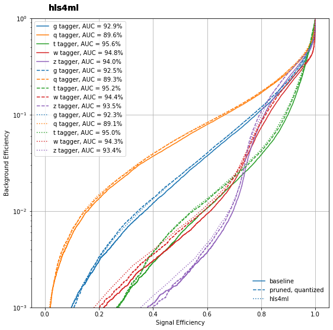

<!DOCTYPE html>

<html>
  <head>
    <meta charset="utf-8" />
    <meta name="viewport" content="width=device-width, initial-scale=1.0" /><meta name="generator" content="Docutils 0.17.1: http://docutils.sourceforge.net/" />

    <title>Quantization &#8212; IAIFI Summer School Tutorials</title>
    
  <!-- Loaded before other Sphinx assets -->
  <link href="_static/styles/theme.css?digest=1999514e3f237ded88cf" rel="stylesheet">
<link href="_static/styles/pydata-sphinx-theme.css?digest=1999514e3f237ded88cf" rel="stylesheet">

    
  <link rel="stylesheet"
    href="_static/vendor/fontawesome/5.13.0/css/all.min.css">
  <link rel="preload" as="font" type="font/woff2" crossorigin
    href="_static/vendor/fontawesome/5.13.0/webfonts/fa-solid-900.woff2">
  <link rel="preload" as="font" type="font/woff2" crossorigin
    href="_static/vendor/fontawesome/5.13.0/webfonts/fa-brands-400.woff2">

    <link rel="stylesheet" type="text/css" href="_static/pygments.css" />
    <link rel="stylesheet" href="_static/styles/sphinx-book-theme.css?digest=5115cc725059bd94278eecd172e13a965bf8f5a9" type="text/css" />
    <link rel="stylesheet" type="text/css" href="_static/togglebutton.css" />
    <link rel="stylesheet" type="text/css" href="_static/copybutton.css" />
    <link rel="stylesheet" type="text/css" href="_static/mystnb.css" />
    <link rel="stylesheet" type="text/css" href="_static/sphinx-thebe.css" />
    <link rel="stylesheet" type="text/css" href="_static/design-style.b7bb847fb20b106c3d81b95245e65545.min.css" />
    
  <!-- Pre-loaded scripts that we'll load fully later -->
  <link rel="preload" as="script" href="_static/scripts/pydata-sphinx-theme.js?digest=1999514e3f237ded88cf">

    <script data-url_root="./" id="documentation_options" src="_static/documentation_options.js"></script>
    <script src="_static/jquery.js"></script>
    <script src="_static/underscore.js"></script>
    <script src="_static/doctools.js"></script>
    <script src="_static/clipboard.min.js"></script>
    <script src="_static/copybutton.js"></script>
    <script src="_static/scripts/sphinx-book-theme.js?digest=9c920249402e914e316237a7dbc6769907cce411"></script>
    <script>let toggleHintShow = 'Click to show';</script>
    <script>let toggleHintHide = 'Click to hide';</script>
    <script>let toggleOpenOnPrint = 'true';</script>
    <script src="_static/togglebutton.js"></script>
    <script>var togglebuttonSelector = '.toggle, .admonition.dropdown, .tag_hide_input div.cell_input, .tag_hide-input div.cell_input, .tag_hide_output div.cell_output, .tag_hide-output div.cell_output, .tag_hide_cell.cell, .tag_hide-cell.cell';</script>
    <script src="_static/design-tabs.js"></script>
    <script>const THEBE_JS_URL = "https://unpkg.com/thebe@0.8.2/lib/index.js"
const thebe_selector = ".thebe,.cell"
const thebe_selector_input = "pre"
const thebe_selector_output = ".output, .cell_output"
</script>
    <script async="async" src="_static/sphinx-thebe.js"></script>
    <link rel="canonical" href="https://jduarte.physics.ucsd.edu/iaifi-summer-school/2.4_quantization.html" />
    <link rel="index" title="Index" href="genindex.html" />
    <link rel="search" title="Search" href="search.html" />
    <link rel="next" title="References" href="zreferences.html" />
    <link rel="prev" title="&lt;no title&gt;" href="2.3_compression.html" />
    <meta name="viewport" content="width=device-width, initial-scale=1" />
    <meta name="docsearch:language" content="None">
    

    <!-- Google Analytics -->
    
  </head>
  <body data-spy="scroll" data-target="#bd-toc-nav" data-offset="60">
<!-- Checkboxes to toggle the left sidebar -->
<input type="checkbox" class="sidebar-toggle" name="__navigation" id="__navigation" aria-label="Toggle navigation sidebar">
<label class="overlay overlay-navbar" for="__navigation">
    <div class="visually-hidden">Toggle navigation sidebar</div>
</label>
<!-- Checkboxes to toggle the in-page toc -->
<input type="checkbox" class="sidebar-toggle" name="__page-toc" id="__page-toc" aria-label="Toggle in-page Table of Contents">
<label class="overlay overlay-pagetoc" for="__page-toc">
    <div class="visually-hidden">Toggle in-page Table of Contents</div>
</label>
<!-- Headers at the top -->
<div class="announcement header-item noprint"></div>
<div class="header header-item noprint"></div>

    
    <div class="container-fluid" id="banner"></div>

    

    <div class="container-xl">
      <div class="row">
          
<!-- Sidebar -->
<div class="bd-sidebar noprint" id="site-navigation">
    <div class="bd-sidebar__content">
        <div class="bd-sidebar__top"><div class="navbar-brand-box">
    <a class="navbar-brand text-wrap" href="index.html">
      
        <!-- `logo` is deprecated in Sphinx 4.0, so remove this when we stop supporting 3 -->
        
      
      
      
      
      
      <h1 class="site-logo" id="site-title">IAIFI Summer School Tutorials</h1>
      
    </a>
</div><form class="bd-search d-flex align-items-center" action="search.html" method="get">
  <i class="icon fas fa-search"></i>
  <input type="search" class="form-control" name="q" id="search-input" placeholder="Search this book..." aria-label="Search this book..." autocomplete="off" >
</form><nav class="bd-links" id="bd-docs-nav" aria-label="Main">
    <div class="bd-toc-item active">
        
        <ul class="nav bd-sidenav bd-sidenav__home-link">
            <li class="toctree-l1">
                <a class="reference internal" href="intro.html">
                    IAIFI Summer School Tutorials
                </a>
            </li>
        </ul>
        <p aria-level="2" class="caption" role="heading">
 <span class="caption-text">
  Representations, Networks, and Symmetries
 </span>
</p>
<ul class="nav bd-sidenav">
 <li class="toctree-l1">
  <a class="reference internal" href="1.1_tabular_data_efps.html">
   Tabular Data using Energy Flow Polynomials
  </a>
 </li>
 <li class="toctree-l1">
  <a class="reference internal" href="1.2_jet_images.html">
   Jet Images
  </a>
 </li>
 <li class="toctree-l1">
  <a class="reference internal" href="1.3_deep_sets.html">
   Deep Sets
  </a>
 </li>
 <li class="toctree-l1">
  <a class="reference internal" href="1.4_gnn_in.html">
   Interaction Network GNN
  </a>
 </li>
 <li class="toctree-l1">
  <a class="reference internal" href="1.5_gnn_lorentz.html">
   Lorentz-Equivariant GNN
  </a>
 </li>
</ul>
<p aria-level="2" class="caption" role="heading">
 <span class="caption-text">
  Model Compression and Fast Machine Learning
 </span>
</p>
<ul class="current nav bd-sidenav">
 <li class="toctree-l1">
  <a class="reference internal" href="2.1_getting_started.html">
   Getting Started
  </a>
 </li>
 <li class="toctree-l1">
  <a class="reference internal" href="2.2_advanced_config.html">
   Advanced Configuration
  </a>
 </li>
 <li class="toctree-l1 current active">
  <a class="current reference internal" href="#">
   Quantization
  </a>
 </li>
</ul>
<p aria-level="2" class="caption" role="heading">
 <span class="caption-text">
  References
 </span>
</p>
<ul class="nav bd-sidenav">
 <li class="toctree-l1">
  <a class="reference internal" href="zreferences.html">
   References
  </a>
 </li>
</ul>

    </div>
</nav></div>
        <div class="bd-sidebar__bottom">
             <!-- To handle the deprecated key -->
            
            <div class="navbar_extra_footer">
            Powered by <a href="https://jupyterbook.org">Jupyter Book</a>
            </div>
            
        </div>
    </div>
    <div id="rtd-footer-container"></div>
</div>


          


          
<!-- A tiny helper pixel to detect if we've scrolled -->
<div class="sbt-scroll-pixel-helper"></div>
<!-- Main content -->
<div class="col py-0 content-container">
    
    <div class="header-article row sticky-top noprint">
        


<div class="col py-1 d-flex header-article-main">
    <div class="header-article__left">
        
        <label for="__navigation"
  class="headerbtn"
  data-toggle="tooltip"
data-placement="right"
title="Toggle navigation"
>
  

<span class="headerbtn__icon-container">
  <i class="fas fa-bars"></i>
  </span>

</label>

        
    </div>
    <div class="header-article__right">
<div class="menu-dropdown menu-dropdown-launch-buttons">
  <button class="headerbtn menu-dropdown__trigger"
      aria-label="Launch interactive content">
      <i class="fas fa-rocket"></i>
  </button>
  <div class="menu-dropdown__content">
    <ul>
      <li>
        <a href="https://mybinder.org/v2/gh/jmduarte/iaifi-summer-school/main?urlpath=tree/book/2.4_quantization.ipynb"
   class="headerbtn"
   data-toggle="tooltip"
data-placement="left"
title="Launch on Binder"
>
  

<span class="headerbtn__icon-container">
  
    
  </span>
<span class="headerbtn__text-container">Binder</span>
</a>

      </li>
      
      <li>
        <a href="https://colab.research.google.com/github/jmduarte/iaifi-summer-school/blob/main/book/2.4_quantization.ipynb"
   class="headerbtn"
   data-toggle="tooltip"
data-placement="left"
title="Launch on Colab"
>
  

<span class="headerbtn__icon-container">
  
    
  </span>
<span class="headerbtn__text-container">Colab</span>
</a>

      </li>
      
    </ul>
  </div>
</div>

<button onclick="toggleFullScreen()"
  class="headerbtn"
  data-toggle="tooltip"
data-placement="bottom"
title="Fullscreen mode"
>
  

<span class="headerbtn__icon-container">
  <i class="fas fa-expand"></i>
  </span>

</button>

<div class="menu-dropdown menu-dropdown-repository-buttons">
  <button class="headerbtn menu-dropdown__trigger"
      aria-label="Source repositories">
      <i class="fab fa-github"></i>
  </button>
  <div class="menu-dropdown__content">
    <ul>
      <li>
        <a href="https://github.com/jmduarte/iaifi-summer-school"
   class="headerbtn"
   data-toggle="tooltip"
data-placement="left"
title="Source repository"
>
  

<span class="headerbtn__icon-container">
  <i class="fab fa-github"></i>
  </span>
<span class="headerbtn__text-container">repository</span>
</a>

      </li>
      
      <li>
        <a href="https://github.com/jmduarte/iaifi-summer-school/issues/new?title=Issue%20on%20page%20%2F2.4_quantization.html&body=Your%20issue%20content%20here."
   class="headerbtn"
   data-toggle="tooltip"
data-placement="left"
title="Open an issue"
>
  

<span class="headerbtn__icon-container">
  <i class="fas fa-lightbulb"></i>
  </span>
<span class="headerbtn__text-container">open issue</span>
</a>

      </li>
      
    </ul>
  </div>
</div>

<div class="menu-dropdown menu-dropdown-download-buttons">
  <button class="headerbtn menu-dropdown__trigger"
      aria-label="Download this page">
      <i class="fas fa-download"></i>
  </button>
  <div class="menu-dropdown__content">
    <ul>
      <li>
        <a href="_sources/2.4_quantization.ipynb"
   class="headerbtn"
   data-toggle="tooltip"
data-placement="left"
title="Download source file"
>
  

<span class="headerbtn__icon-container">
  <i class="fas fa-file"></i>
  </span>
<span class="headerbtn__text-container">.ipynb</span>
</a>

      </li>
      
      <li>
        
<button onclick="printPdf(this)"
  class="headerbtn"
  data-toggle="tooltip"
data-placement="left"
title="Print to PDF"
>
  

<span class="headerbtn__icon-container">
  <i class="fas fa-file-pdf"></i>
  </span>
<span class="headerbtn__text-container">.pdf</span>
</button>

      </li>
      
    </ul>
  </div>
</div>
<label for="__page-toc"
  class="headerbtn headerbtn-page-toc"
  
>
  

<span class="headerbtn__icon-container">
  <i class="fas fa-list"></i>
  </span>

</label>

    </div>
</div>

<!-- Table of contents -->
<div class="col-md-3 bd-toc show noprint">
    <div class="tocsection onthispage pt-5 pb-3">
        <i class="fas fa-list"></i> Contents
    </div>
    <nav id="bd-toc-nav" aria-label="Page">
        <ul class="visible nav section-nav flex-column">
 <li class="toc-h2 nav-item toc-entry">
  <a class="reference internal nav-link" href="#construct-a-new-model">
   Construct a new model
  </a>
 </li>
 <li class="toc-h2 nav-item toc-entry">
  <a class="reference internal nav-link" href="#train-sparse">
   Train sparse
  </a>
 </li>
 <li class="toc-h2 nav-item toc-entry">
  <a class="reference internal nav-link" href="#train-the-model">
   Train the model
  </a>
 </li>
 <li class="toc-h2 nav-item toc-entry">
  <a class="reference internal nav-link" href="#check-performance">
   Check performance
  </a>
 </li>
</ul>

    </nav>
</div>
    </div>
    <div class="article row">
        <div class="col pl-md-3 pl-lg-5 content-container">
            <!-- Table of contents that is only displayed when printing the page -->
            <div id="jb-print-docs-body" class="onlyprint">
                <h1>Quantization</h1>
                <!-- Table of contents -->
                <div id="print-main-content">
                    <div id="jb-print-toc">
                        
                        <div>
                            <h2> Contents </h2>
                        </div>
                        <nav aria-label="Page">
                            <ul class="visible nav section-nav flex-column">
 <li class="toc-h2 nav-item toc-entry">
  <a class="reference internal nav-link" href="#construct-a-new-model">
   Construct a new model
  </a>
 </li>
 <li class="toc-h2 nav-item toc-entry">
  <a class="reference internal nav-link" href="#train-sparse">
   Train sparse
  </a>
 </li>
 <li class="toc-h2 nav-item toc-entry">
  <a class="reference internal nav-link" href="#train-the-model">
   Train the model
  </a>
 </li>
 <li class="toc-h2 nav-item toc-entry">
  <a class="reference internal nav-link" href="#check-performance">
   Check performance
  </a>
 </li>
</ul>

                        </nav>
                    </div>
                </div>
            </div>
            <main id="main-content" role="main">
                
              <div>
                
  <div class="cell docutils container">
<div class="cell_input docutils container">
<div class="highlight-ipython3 notranslate"><div class="highlight"><pre><span></span><span class="o">!</span>apt-get  -qq  install  -y  graphviz  <span class="o">&amp;&amp;</span>  pip  install  pydot
<span class="o">!</span>pip  install  -U  matplotlib
<span class="o">!</span>pip  install  git+https://github.com/fastmachinelearning/hls4ml.git@main#egg<span class="o">=</span>hls4ml<span class="o">[</span>profiling<span class="o">]</span>
<span class="o">!</span>pip  install  <span class="nv">qkeras</span><span class="o">==</span><span class="m">0</span>.9.0
</pre></div>
</div>
</div>
<div class="cell_output docutils container">
<div class="output stream highlight-myst-ansi notranslate"><div class="highlight"><pre><span></span>E: Could not open lock file /var/lib/dpkg/lock-frontend - open (13: Permission denied)
E: Unable to acquire the dpkg frontend lock (/var/lib/dpkg/lock-frontend), are you root?
</pre></div>
</div>
<div class="output stream highlight-myst-ansi notranslate"><div class="highlight"><pre><span></span>Requirement already satisfied: matplotlib in /opt/hostedtoolcache/Python/3.7.13/x64/lib/python3.7/site-packages (3.5.2)
</pre></div>
</div>
<div class="output stream highlight-myst-ansi notranslate"><div class="highlight"><pre><span></span>Requirement already satisfied: kiwisolver&gt;=1.0.1 in /opt/hostedtoolcache/Python/3.7.13/x64/lib/python3.7/site-packages (from matplotlib) (1.4.4)
Requirement already satisfied: python-dateutil&gt;=2.7 in /opt/hostedtoolcache/Python/3.7.13/x64/lib/python3.7/site-packages (from matplotlib) (2.8.2)
Requirement already satisfied: packaging&gt;=20.0 in /opt/hostedtoolcache/Python/3.7.13/x64/lib/python3.7/site-packages (from matplotlib) (21.3)
Requirement already satisfied: pyparsing&gt;=2.2.1 in /opt/hostedtoolcache/Python/3.7.13/x64/lib/python3.7/site-packages (from matplotlib) (3.0.9)
Requirement already satisfied: pillow&gt;=6.2.0 in /opt/hostedtoolcache/Python/3.7.13/x64/lib/python3.7/site-packages (from matplotlib) (9.2.0)
Requirement already satisfied: numpy&gt;=1.17 in /opt/hostedtoolcache/Python/3.7.13/x64/lib/python3.7/site-packages (from matplotlib) (1.21.6)
Requirement already satisfied: cycler&gt;=0.10 in /opt/hostedtoolcache/Python/3.7.13/x64/lib/python3.7/site-packages (from matplotlib) (0.11.0)
Requirement already satisfied: fonttools&gt;=4.22.0 in /opt/hostedtoolcache/Python/3.7.13/x64/lib/python3.7/site-packages (from matplotlib) (4.34.4)
</pre></div>
</div>
<div class="output stream highlight-myst-ansi notranslate"><div class="highlight"><pre><span></span>Requirement already satisfied: typing-extensions in /opt/hostedtoolcache/Python/3.7.13/x64/lib/python3.7/site-packages (from kiwisolver&gt;=1.0.1-&gt;matplotlib) (4.3.0)
</pre></div>
</div>
<div class="output stream highlight-myst-ansi notranslate"><div class="highlight"><pre><span></span>Requirement already satisfied: six&gt;=1.5 in /opt/hostedtoolcache/Python/3.7.13/x64/lib/python3.7/site-packages (from python-dateutil&gt;=2.7-&gt;matplotlib) (1.16.0)
</pre></div>
</div>
<div class="output stream highlight-myst-ansi notranslate"><div class="highlight"><pre><span></span>Collecting hls4ml[profiling]
  Cloning https://github.com/fastmachinelearning/hls4ml.git (to revision main) to /tmp/pip-install-1at511q_/hls4ml_39fb2e4c9e3f4a0ab5da5edce5efea87
  Running command git clone --filter=blob:none --quiet https://github.com/fastmachinelearning/hls4ml.git /tmp/pip-install-1at511q_/hls4ml_39fb2e4c9e3f4a0ab5da5edce5efea87
</pre></div>
</div>
<div class="output stream highlight-myst-ansi notranslate"><div class="highlight"><pre><span></span>  Resolved https://github.com/fastmachinelearning/hls4ml.git to commit 62046d799a4dbec150addc7f78fea5b579efeda1
  Running command git submodule update --init --recursive -q
</pre></div>
</div>
<div class="output stream highlight-myst-ansi notranslate"><div class="highlight"><pre><span></span>  Preparing metadata (setup.py) ... ?25l-
</pre></div>
</div>
<div class="output stream highlight-myst-ansi notranslate"><div class="highlight"><pre><span></span> done
</pre></div>
</div>
<div class="output stream highlight-myst-ansi notranslate"><div class="highlight"><pre><span></span>?25hRequirement already satisfied: numpy in /opt/hostedtoolcache/Python/3.7.13/x64/lib/python3.7/site-packages (from hls4ml[profiling]) (1.21.6)
Requirement already satisfied: six in /opt/hostedtoolcache/Python/3.7.13/x64/lib/python3.7/site-packages (from hls4ml[profiling]) (1.16.0)
Requirement already satisfied: pyyaml in /opt/hostedtoolcache/Python/3.7.13/x64/lib/python3.7/site-packages (from hls4ml[profiling]) (6.0)
Requirement already satisfied: h5py in /opt/hostedtoolcache/Python/3.7.13/x64/lib/python3.7/site-packages (from hls4ml[profiling]) (3.7.0)
Requirement already satisfied: onnx&gt;=1.4.0 in /opt/hostedtoolcache/Python/3.7.13/x64/lib/python3.7/site-packages (from hls4ml[profiling]) (1.12.0)
Requirement already satisfied: calmjs.parse in /opt/hostedtoolcache/Python/3.7.13/x64/lib/python3.7/site-packages (from hls4ml[profiling]) (1.3.0)
Requirement already satisfied: tabulate in /opt/hostedtoolcache/Python/3.7.13/x64/lib/python3.7/site-packages (from hls4ml[profiling]) (0.8.10)
Requirement already satisfied: pydigitalwavetools==1.1 in /opt/hostedtoolcache/Python/3.7.13/x64/lib/python3.7/site-packages (from hls4ml[profiling]) (1.1)
Requirement already satisfied: qkeras in /opt/hostedtoolcache/Python/3.7.13/x64/lib/python3.7/site-packages (from hls4ml[profiling]) (0.9.0)
Requirement already satisfied: pandas in /opt/hostedtoolcache/Python/3.7.13/x64/lib/python3.7/site-packages (from hls4ml[profiling]) (1.3.5)
Requirement already satisfied: seaborn in /opt/hostedtoolcache/Python/3.7.13/x64/lib/python3.7/site-packages (from hls4ml[profiling]) (0.11.2)
Requirement already satisfied: matplotlib in /opt/hostedtoolcache/Python/3.7.13/x64/lib/python3.7/site-packages (from hls4ml[profiling]) (3.5.2)
Requirement already satisfied: protobuf&lt;=3.20.1,&gt;=3.12.2 in /opt/hostedtoolcache/Python/3.7.13/x64/lib/python3.7/site-packages (from onnx&gt;=1.4.0-&gt;hls4ml[profiling]) (3.19.4)
Requirement already satisfied: typing-extensions&gt;=3.6.2.1 in /opt/hostedtoolcache/Python/3.7.13/x64/lib/python3.7/site-packages (from onnx&gt;=1.4.0-&gt;hls4ml[profiling]) (4.3.0)
Requirement already satisfied: setuptools in /opt/hostedtoolcache/Python/3.7.13/x64/lib/python3.7/site-packages (from calmjs.parse-&gt;hls4ml[profiling]) (63.3.0)
Requirement already satisfied: ply&gt;=3.6 in /opt/hostedtoolcache/Python/3.7.13/x64/lib/python3.7/site-packages (from calmjs.parse-&gt;hls4ml[profiling]) (3.11)
</pre></div>
</div>
<div class="output stream highlight-myst-ansi notranslate"><div class="highlight"><pre><span></span>Requirement already satisfied: pillow&gt;=6.2.0 in /opt/hostedtoolcache/Python/3.7.13/x64/lib/python3.7/site-packages (from matplotlib-&gt;hls4ml[profiling]) (9.2.0)
Requirement already satisfied: fonttools&gt;=4.22.0 in /opt/hostedtoolcache/Python/3.7.13/x64/lib/python3.7/site-packages (from matplotlib-&gt;hls4ml[profiling]) (4.34.4)
Requirement already satisfied: packaging&gt;=20.0 in /opt/hostedtoolcache/Python/3.7.13/x64/lib/python3.7/site-packages (from matplotlib-&gt;hls4ml[profiling]) (21.3)
Requirement already satisfied: cycler&gt;=0.10 in /opt/hostedtoolcache/Python/3.7.13/x64/lib/python3.7/site-packages (from matplotlib-&gt;hls4ml[profiling]) (0.11.0)
Requirement already satisfied: pyparsing&gt;=2.2.1 in /opt/hostedtoolcache/Python/3.7.13/x64/lib/python3.7/site-packages (from matplotlib-&gt;hls4ml[profiling]) (3.0.9)
Requirement already satisfied: kiwisolver&gt;=1.0.1 in /opt/hostedtoolcache/Python/3.7.13/x64/lib/python3.7/site-packages (from matplotlib-&gt;hls4ml[profiling]) (1.4.4)
Requirement already satisfied: python-dateutil&gt;=2.7 in /opt/hostedtoolcache/Python/3.7.13/x64/lib/python3.7/site-packages (from matplotlib-&gt;hls4ml[profiling]) (2.8.2)
Requirement already satisfied: pytz&gt;=2017.3 in /opt/hostedtoolcache/Python/3.7.13/x64/lib/python3.7/site-packages (from pandas-&gt;hls4ml[profiling]) (2022.1)
</pre></div>
</div>
<div class="output stream highlight-myst-ansi notranslate"><div class="highlight"><pre><span></span>Requirement already satisfied: tensorflow-model-optimization&gt;=0.2.1 in /opt/hostedtoolcache/Python/3.7.13/x64/lib/python3.7/site-packages (from qkeras-&gt;hls4ml[profiling]) (0.7.3)
Requirement already satisfied: keras-tuner&gt;=1.0.1 in /opt/hostedtoolcache/Python/3.7.13/x64/lib/python3.7/site-packages (from qkeras-&gt;hls4ml[profiling]) (1.1.3)
Requirement already satisfied: scikit-learn&gt;=0.23.1 in /opt/hostedtoolcache/Python/3.7.13/x64/lib/python3.7/site-packages (from qkeras-&gt;hls4ml[profiling]) (1.0.2)
Requirement already satisfied: tqdm&gt;=4.48.0 in /opt/hostedtoolcache/Python/3.7.13/x64/lib/python3.7/site-packages (from qkeras-&gt;hls4ml[profiling]) (4.64.0)
Requirement already satisfied: scipy&gt;=1.4.1 in /opt/hostedtoolcache/Python/3.7.13/x64/lib/python3.7/site-packages (from qkeras-&gt;hls4ml[profiling]) (1.7.3)
Requirement already satisfied: networkx&gt;=2.1 in /opt/hostedtoolcache/Python/3.7.13/x64/lib/python3.7/site-packages (from qkeras-&gt;hls4ml[profiling]) (2.6.3)
Requirement already satisfied: pyparser in /opt/hostedtoolcache/Python/3.7.13/x64/lib/python3.7/site-packages (from qkeras-&gt;hls4ml[profiling]) (1.0)
</pre></div>
</div>
<div class="output stream highlight-myst-ansi notranslate"><div class="highlight"><pre><span></span>Requirement already satisfied: tensorboard in /opt/hostedtoolcache/Python/3.7.13/x64/lib/python3.7/site-packages (from keras-tuner&gt;=1.0.1-&gt;qkeras-&gt;hls4ml[profiling]) (2.9.1)
Requirement already satisfied: requests in /opt/hostedtoolcache/Python/3.7.13/x64/lib/python3.7/site-packages (from keras-tuner&gt;=1.0.1-&gt;qkeras-&gt;hls4ml[profiling]) (2.28.1)
Requirement already satisfied: kt-legacy in /opt/hostedtoolcache/Python/3.7.13/x64/lib/python3.7/site-packages (from keras-tuner&gt;=1.0.1-&gt;qkeras-&gt;hls4ml[profiling]) (1.0.4)
Requirement already satisfied: ipython in /opt/hostedtoolcache/Python/3.7.13/x64/lib/python3.7/site-packages (from keras-tuner&gt;=1.0.1-&gt;qkeras-&gt;hls4ml[profiling]) (7.34.0)
</pre></div>
</div>
<div class="output stream highlight-myst-ansi notranslate"><div class="highlight"><pre><span></span>Requirement already satisfied: threadpoolctl&gt;=2.0.0 in /opt/hostedtoolcache/Python/3.7.13/x64/lib/python3.7/site-packages (from scikit-learn&gt;=0.23.1-&gt;qkeras-&gt;hls4ml[profiling]) (3.1.0)
Requirement already satisfied: joblib&gt;=0.11 in /opt/hostedtoolcache/Python/3.7.13/x64/lib/python3.7/site-packages (from scikit-learn&gt;=0.23.1-&gt;qkeras-&gt;hls4ml[profiling]) (1.1.0)
Requirement already satisfied: dm-tree~=0.1.1 in /opt/hostedtoolcache/Python/3.7.13/x64/lib/python3.7/site-packages (from tensorflow-model-optimization&gt;=0.2.1-&gt;qkeras-&gt;hls4ml[profiling]) (0.1.7)
</pre></div>
</div>
<div class="output stream highlight-myst-ansi notranslate"><div class="highlight"><pre><span></span>Requirement already satisfied: parse==1.6.5 in /opt/hostedtoolcache/Python/3.7.13/x64/lib/python3.7/site-packages (from pyparser-&gt;qkeras-&gt;hls4ml[profiling]) (1.6.5)
</pre></div>
</div>
<div class="output stream highlight-myst-ansi notranslate"><div class="highlight"><pre><span></span>Requirement already satisfied: jedi&gt;=0.16 in /opt/hostedtoolcache/Python/3.7.13/x64/lib/python3.7/site-packages (from ipython-&gt;keras-tuner&gt;=1.0.1-&gt;qkeras-&gt;hls4ml[profiling]) (0.18.1)
Requirement already satisfied: decorator in /opt/hostedtoolcache/Python/3.7.13/x64/lib/python3.7/site-packages (from ipython-&gt;keras-tuner&gt;=1.0.1-&gt;qkeras-&gt;hls4ml[profiling]) (5.1.1)
Requirement already satisfied: traitlets&gt;=4.2 in /opt/hostedtoolcache/Python/3.7.13/x64/lib/python3.7/site-packages (from ipython-&gt;keras-tuner&gt;=1.0.1-&gt;qkeras-&gt;hls4ml[profiling]) (5.3.0)
Requirement already satisfied: pickleshare in /opt/hostedtoolcache/Python/3.7.13/x64/lib/python3.7/site-packages (from ipython-&gt;keras-tuner&gt;=1.0.1-&gt;qkeras-&gt;hls4ml[profiling]) (0.7.5)
Requirement already satisfied: matplotlib-inline in /opt/hostedtoolcache/Python/3.7.13/x64/lib/python3.7/site-packages (from ipython-&gt;keras-tuner&gt;=1.0.1-&gt;qkeras-&gt;hls4ml[profiling]) (0.1.3)
Requirement already satisfied: pygments in /opt/hostedtoolcache/Python/3.7.13/x64/lib/python3.7/site-packages (from ipython-&gt;keras-tuner&gt;=1.0.1-&gt;qkeras-&gt;hls4ml[profiling]) (2.12.0)
Requirement already satisfied: pexpect&gt;4.3 in /opt/hostedtoolcache/Python/3.7.13/x64/lib/python3.7/site-packages (from ipython-&gt;keras-tuner&gt;=1.0.1-&gt;qkeras-&gt;hls4ml[profiling]) (4.8.0)
Requirement already satisfied: prompt-toolkit!=3.0.0,!=3.0.1,&lt;3.1.0,&gt;=2.0.0 in /opt/hostedtoolcache/Python/3.7.13/x64/lib/python3.7/site-packages (from ipython-&gt;keras-tuner&gt;=1.0.1-&gt;qkeras-&gt;hls4ml[profiling]) (3.0.30)
Requirement already satisfied: backcall in /opt/hostedtoolcache/Python/3.7.13/x64/lib/python3.7/site-packages (from ipython-&gt;keras-tuner&gt;=1.0.1-&gt;qkeras-&gt;hls4ml[profiling]) (0.2.0)
</pre></div>
</div>
<div class="output stream highlight-myst-ansi notranslate"><div class="highlight"><pre><span></span>Requirement already satisfied: certifi&gt;=2017.4.17 in /opt/hostedtoolcache/Python/3.7.13/x64/lib/python3.7/site-packages (from requests-&gt;keras-tuner&gt;=1.0.1-&gt;qkeras-&gt;hls4ml[profiling]) (2022.6.15)
Requirement already satisfied: idna&lt;4,&gt;=2.5 in /opt/hostedtoolcache/Python/3.7.13/x64/lib/python3.7/site-packages (from requests-&gt;keras-tuner&gt;=1.0.1-&gt;qkeras-&gt;hls4ml[profiling]) (3.3)
Requirement already satisfied: charset-normalizer&lt;3,&gt;=2 in /opt/hostedtoolcache/Python/3.7.13/x64/lib/python3.7/site-packages (from requests-&gt;keras-tuner&gt;=1.0.1-&gt;qkeras-&gt;hls4ml[profiling]) (2.1.0)
Requirement already satisfied: urllib3&lt;1.27,&gt;=1.21.1 in /opt/hostedtoolcache/Python/3.7.13/x64/lib/python3.7/site-packages (from requests-&gt;keras-tuner&gt;=1.0.1-&gt;qkeras-&gt;hls4ml[profiling]) (1.26.11)
Requirement already satisfied: wheel&gt;=0.26 in /opt/hostedtoolcache/Python/3.7.13/x64/lib/python3.7/site-packages (from tensorboard-&gt;keras-tuner&gt;=1.0.1-&gt;qkeras-&gt;hls4ml[profiling]) (0.37.1)
Requirement already satisfied: markdown&gt;=2.6.8 in /opt/hostedtoolcache/Python/3.7.13/x64/lib/python3.7/site-packages (from tensorboard-&gt;keras-tuner&gt;=1.0.1-&gt;qkeras-&gt;hls4ml[profiling]) (3.4.1)
Requirement already satisfied: absl-py&gt;=0.4 in /opt/hostedtoolcache/Python/3.7.13/x64/lib/python3.7/site-packages (from tensorboard-&gt;keras-tuner&gt;=1.0.1-&gt;qkeras-&gt;hls4ml[profiling]) (1.2.0)
Requirement already satisfied: tensorboard-plugin-wit&gt;=1.6.0 in /opt/hostedtoolcache/Python/3.7.13/x64/lib/python3.7/site-packages (from tensorboard-&gt;keras-tuner&gt;=1.0.1-&gt;qkeras-&gt;hls4ml[profiling]) (1.8.1)
Requirement already satisfied: grpcio&gt;=1.24.3 in /opt/hostedtoolcache/Python/3.7.13/x64/lib/python3.7/site-packages (from tensorboard-&gt;keras-tuner&gt;=1.0.1-&gt;qkeras-&gt;hls4ml[profiling]) (1.48.0)
Requirement already satisfied: google-auth-oauthlib&lt;0.5,&gt;=0.4.1 in /opt/hostedtoolcache/Python/3.7.13/x64/lib/python3.7/site-packages (from tensorboard-&gt;keras-tuner&gt;=1.0.1-&gt;qkeras-&gt;hls4ml[profiling]) (0.4.6)
Requirement already satisfied: werkzeug&gt;=1.0.1 in /opt/hostedtoolcache/Python/3.7.13/x64/lib/python3.7/site-packages (from tensorboard-&gt;keras-tuner&gt;=1.0.1-&gt;qkeras-&gt;hls4ml[profiling]) (2.2.1)
Requirement already satisfied: tensorboard-data-server&lt;0.7.0,&gt;=0.6.0 in /opt/hostedtoolcache/Python/3.7.13/x64/lib/python3.7/site-packages (from tensorboard-&gt;keras-tuner&gt;=1.0.1-&gt;qkeras-&gt;hls4ml[profiling]) (0.6.1)
</pre></div>
</div>
<div class="output stream highlight-myst-ansi notranslate"><div class="highlight"><pre><span></span>Requirement already satisfied: google-auth&lt;3,&gt;=1.6.3 in /opt/hostedtoolcache/Python/3.7.13/x64/lib/python3.7/site-packages (from tensorboard-&gt;keras-tuner&gt;=1.0.1-&gt;qkeras-&gt;hls4ml[profiling]) (2.9.1)
</pre></div>
</div>
<div class="output stream highlight-myst-ansi notranslate"><div class="highlight"><pre><span></span>Requirement already satisfied: pyasn1-modules&gt;=0.2.1 in /opt/hostedtoolcache/Python/3.7.13/x64/lib/python3.7/site-packages (from google-auth&lt;3,&gt;=1.6.3-&gt;tensorboard-&gt;keras-tuner&gt;=1.0.1-&gt;qkeras-&gt;hls4ml[profiling]) (0.2.8)
Requirement already satisfied: cachetools&lt;6.0,&gt;=2.0.0 in /opt/hostedtoolcache/Python/3.7.13/x64/lib/python3.7/site-packages (from google-auth&lt;3,&gt;=1.6.3-&gt;tensorboard-&gt;keras-tuner&gt;=1.0.1-&gt;qkeras-&gt;hls4ml[profiling]) (5.2.0)
Requirement already satisfied: rsa&lt;5,&gt;=3.1.4 in /opt/hostedtoolcache/Python/3.7.13/x64/lib/python3.7/site-packages (from google-auth&lt;3,&gt;=1.6.3-&gt;tensorboard-&gt;keras-tuner&gt;=1.0.1-&gt;qkeras-&gt;hls4ml[profiling]) (4.9)
Requirement already satisfied: requests-oauthlib&gt;=0.7.0 in /opt/hostedtoolcache/Python/3.7.13/x64/lib/python3.7/site-packages (from google-auth-oauthlib&lt;0.5,&gt;=0.4.1-&gt;tensorboard-&gt;keras-tuner&gt;=1.0.1-&gt;qkeras-&gt;hls4ml[profiling]) (1.3.1)
</pre></div>
</div>
<div class="output stream highlight-myst-ansi notranslate"><div class="highlight"><pre><span></span>Requirement already satisfied: parso&lt;0.9.0,&gt;=0.8.0 in /opt/hostedtoolcache/Python/3.7.13/x64/lib/python3.7/site-packages (from jedi&gt;=0.16-&gt;ipython-&gt;keras-tuner&gt;=1.0.1-&gt;qkeras-&gt;hls4ml[profiling]) (0.8.3)
Requirement already satisfied: importlib-metadata&gt;=4.4 in /opt/hostedtoolcache/Python/3.7.13/x64/lib/python3.7/site-packages (from markdown&gt;=2.6.8-&gt;tensorboard-&gt;keras-tuner&gt;=1.0.1-&gt;qkeras-&gt;hls4ml[profiling]) (4.12.0)
Requirement already satisfied: ptyprocess&gt;=0.5 in /opt/hostedtoolcache/Python/3.7.13/x64/lib/python3.7/site-packages (from pexpect&gt;4.3-&gt;ipython-&gt;keras-tuner&gt;=1.0.1-&gt;qkeras-&gt;hls4ml[profiling]) (0.7.0)
Requirement already satisfied: wcwidth in /opt/hostedtoolcache/Python/3.7.13/x64/lib/python3.7/site-packages (from prompt-toolkit!=3.0.0,!=3.0.1,&lt;3.1.0,&gt;=2.0.0-&gt;ipython-&gt;keras-tuner&gt;=1.0.1-&gt;qkeras-&gt;hls4ml[profiling]) (0.2.5)
</pre></div>
</div>
<div class="output stream highlight-myst-ansi notranslate"><div class="highlight"><pre><span></span>Requirement already satisfied: MarkupSafe&gt;=2.1.1 in /opt/hostedtoolcache/Python/3.7.13/x64/lib/python3.7/site-packages (from werkzeug&gt;=1.0.1-&gt;tensorboard-&gt;keras-tuner&gt;=1.0.1-&gt;qkeras-&gt;hls4ml[profiling]) (2.1.1)
</pre></div>
</div>
<div class="output stream highlight-myst-ansi notranslate"><div class="highlight"><pre><span></span>Requirement already satisfied: zipp&gt;=0.5 in /opt/hostedtoolcache/Python/3.7.13/x64/lib/python3.7/site-packages (from importlib-metadata&gt;=4.4-&gt;markdown&gt;=2.6.8-&gt;tensorboard-&gt;keras-tuner&gt;=1.0.1-&gt;qkeras-&gt;hls4ml[profiling]) (3.8.1)
</pre></div>
</div>
<div class="output stream highlight-myst-ansi notranslate"><div class="highlight"><pre><span></span>Requirement already satisfied: pyasn1&lt;0.5.0,&gt;=0.4.6 in /opt/hostedtoolcache/Python/3.7.13/x64/lib/python3.7/site-packages (from pyasn1-modules&gt;=0.2.1-&gt;google-auth&lt;3,&gt;=1.6.3-&gt;tensorboard-&gt;keras-tuner&gt;=1.0.1-&gt;qkeras-&gt;hls4ml[profiling]) (0.4.8)
Requirement already satisfied: oauthlib&gt;=3.0.0 in /opt/hostedtoolcache/Python/3.7.13/x64/lib/python3.7/site-packages (from requests-oauthlib&gt;=0.7.0-&gt;google-auth-oauthlib&lt;0.5,&gt;=0.4.1-&gt;tensorboard-&gt;keras-tuner&gt;=1.0.1-&gt;qkeras-&gt;hls4ml[profiling]) (3.2.0)
</pre></div>
</div>
<div class="output stream highlight-myst-ansi notranslate"><div class="highlight"><pre><span></span>Requirement already satisfied: qkeras==0.9.0 in /opt/hostedtoolcache/Python/3.7.13/x64/lib/python3.7/site-packages (0.9.0)
Requirement already satisfied: scikit-learn&gt;=0.23.1 in /opt/hostedtoolcache/Python/3.7.13/x64/lib/python3.7/site-packages (from qkeras==0.9.0) (1.0.2)
Requirement already satisfied: scipy&gt;=1.4.1 in /opt/hostedtoolcache/Python/3.7.13/x64/lib/python3.7/site-packages (from qkeras==0.9.0) (1.7.3)
Requirement already satisfied: tensorflow-model-optimization&gt;=0.2.1 in /opt/hostedtoolcache/Python/3.7.13/x64/lib/python3.7/site-packages (from qkeras==0.9.0) (0.7.3)
Requirement already satisfied: setuptools&gt;=41.0.0 in /opt/hostedtoolcache/Python/3.7.13/x64/lib/python3.7/site-packages (from qkeras==0.9.0) (63.3.0)
Requirement already satisfied: keras-tuner&gt;=1.0.1 in /opt/hostedtoolcache/Python/3.7.13/x64/lib/python3.7/site-packages (from qkeras==0.9.0) (1.1.3)
Requirement already satisfied: pyparser in /opt/hostedtoolcache/Python/3.7.13/x64/lib/python3.7/site-packages (from qkeras==0.9.0) (1.0)
Requirement already satisfied: networkx&gt;=2.1 in /opt/hostedtoolcache/Python/3.7.13/x64/lib/python3.7/site-packages (from qkeras==0.9.0) (2.6.3)
Requirement already satisfied: numpy&gt;=1.16.0 in /opt/hostedtoolcache/Python/3.7.13/x64/lib/python3.7/site-packages (from qkeras==0.9.0) (1.21.6)
Requirement already satisfied: tqdm&gt;=4.48.0 in /opt/hostedtoolcache/Python/3.7.13/x64/lib/python3.7/site-packages (from qkeras==0.9.0) (4.64.0)
</pre></div>
</div>
<div class="output stream highlight-myst-ansi notranslate"><div class="highlight"><pre><span></span>Requirement already satisfied: packaging in /opt/hostedtoolcache/Python/3.7.13/x64/lib/python3.7/site-packages (from keras-tuner&gt;=1.0.1-&gt;qkeras==0.9.0) (21.3)
Requirement already satisfied: ipython in /opt/hostedtoolcache/Python/3.7.13/x64/lib/python3.7/site-packages (from keras-tuner&gt;=1.0.1-&gt;qkeras==0.9.0) (7.34.0)
Requirement already satisfied: requests in /opt/hostedtoolcache/Python/3.7.13/x64/lib/python3.7/site-packages (from keras-tuner&gt;=1.0.1-&gt;qkeras==0.9.0) (2.28.1)
Requirement already satisfied: tensorboard in /opt/hostedtoolcache/Python/3.7.13/x64/lib/python3.7/site-packages (from keras-tuner&gt;=1.0.1-&gt;qkeras==0.9.0) (2.9.1)
Requirement already satisfied: kt-legacy in /opt/hostedtoolcache/Python/3.7.13/x64/lib/python3.7/site-packages (from keras-tuner&gt;=1.0.1-&gt;qkeras==0.9.0) (1.0.4)
</pre></div>
</div>
<div class="output stream highlight-myst-ansi notranslate"><div class="highlight"><pre><span></span>Requirement already satisfied: joblib&gt;=0.11 in /opt/hostedtoolcache/Python/3.7.13/x64/lib/python3.7/site-packages (from scikit-learn&gt;=0.23.1-&gt;qkeras==0.9.0) (1.1.0)
Requirement already satisfied: threadpoolctl&gt;=2.0.0 in /opt/hostedtoolcache/Python/3.7.13/x64/lib/python3.7/site-packages (from scikit-learn&gt;=0.23.1-&gt;qkeras==0.9.0) (3.1.0)
Requirement already satisfied: dm-tree~=0.1.1 in /opt/hostedtoolcache/Python/3.7.13/x64/lib/python3.7/site-packages (from tensorflow-model-optimization&gt;=0.2.1-&gt;qkeras==0.9.0) (0.1.7)
Requirement already satisfied: six~=1.10 in /opt/hostedtoolcache/Python/3.7.13/x64/lib/python3.7/site-packages (from tensorflow-model-optimization&gt;=0.2.1-&gt;qkeras==0.9.0) (1.16.0)
</pre></div>
</div>
<div class="output stream highlight-myst-ansi notranslate"><div class="highlight"><pre><span></span>Requirement already satisfied: parse==1.6.5 in /opt/hostedtoolcache/Python/3.7.13/x64/lib/python3.7/site-packages (from pyparser-&gt;qkeras==0.9.0) (1.6.5)
</pre></div>
</div>
<div class="output stream highlight-myst-ansi notranslate"><div class="highlight"><pre><span></span>Requirement already satisfied: jedi&gt;=0.16 in /opt/hostedtoolcache/Python/3.7.13/x64/lib/python3.7/site-packages (from ipython-&gt;keras-tuner&gt;=1.0.1-&gt;qkeras==0.9.0) (0.18.1)
Requirement already satisfied: prompt-toolkit!=3.0.0,!=3.0.1,&lt;3.1.0,&gt;=2.0.0 in /opt/hostedtoolcache/Python/3.7.13/x64/lib/python3.7/site-packages (from ipython-&gt;keras-tuner&gt;=1.0.1-&gt;qkeras==0.9.0) (3.0.30)
Requirement already satisfied: matplotlib-inline in /opt/hostedtoolcache/Python/3.7.13/x64/lib/python3.7/site-packages (from ipython-&gt;keras-tuner&gt;=1.0.1-&gt;qkeras==0.9.0) (0.1.3)
Requirement already satisfied: pickleshare in /opt/hostedtoolcache/Python/3.7.13/x64/lib/python3.7/site-packages (from ipython-&gt;keras-tuner&gt;=1.0.1-&gt;qkeras==0.9.0) (0.7.5)
Requirement already satisfied: backcall in /opt/hostedtoolcache/Python/3.7.13/x64/lib/python3.7/site-packages (from ipython-&gt;keras-tuner&gt;=1.0.1-&gt;qkeras==0.9.0) (0.2.0)
Requirement already satisfied: traitlets&gt;=4.2 in /opt/hostedtoolcache/Python/3.7.13/x64/lib/python3.7/site-packages (from ipython-&gt;keras-tuner&gt;=1.0.1-&gt;qkeras==0.9.0) (5.3.0)
Requirement already satisfied: pexpect&gt;4.3 in /opt/hostedtoolcache/Python/3.7.13/x64/lib/python3.7/site-packages (from ipython-&gt;keras-tuner&gt;=1.0.1-&gt;qkeras==0.9.0) (4.8.0)
Requirement already satisfied: decorator in /opt/hostedtoolcache/Python/3.7.13/x64/lib/python3.7/site-packages (from ipython-&gt;keras-tuner&gt;=1.0.1-&gt;qkeras==0.9.0) (5.1.1)
Requirement already satisfied: pygments in /opt/hostedtoolcache/Python/3.7.13/x64/lib/python3.7/site-packages (from ipython-&gt;keras-tuner&gt;=1.0.1-&gt;qkeras==0.9.0) (2.12.0)
Requirement already satisfied: pyparsing!=3.0.5,&gt;=2.0.2 in /opt/hostedtoolcache/Python/3.7.13/x64/lib/python3.7/site-packages (from packaging-&gt;keras-tuner&gt;=1.0.1-&gt;qkeras==0.9.0) (3.0.9)
Requirement already satisfied: certifi&gt;=2017.4.17 in /opt/hostedtoolcache/Python/3.7.13/x64/lib/python3.7/site-packages (from requests-&gt;keras-tuner&gt;=1.0.1-&gt;qkeras==0.9.0) (2022.6.15)
Requirement already satisfied: idna&lt;4,&gt;=2.5 in /opt/hostedtoolcache/Python/3.7.13/x64/lib/python3.7/site-packages (from requests-&gt;keras-tuner&gt;=1.0.1-&gt;qkeras==0.9.0) (3.3)
Requirement already satisfied: charset-normalizer&lt;3,&gt;=2 in /opt/hostedtoolcache/Python/3.7.13/x64/lib/python3.7/site-packages (from requests-&gt;keras-tuner&gt;=1.0.1-&gt;qkeras==0.9.0) (2.1.0)
Requirement already satisfied: urllib3&lt;1.27,&gt;=1.21.1 in /opt/hostedtoolcache/Python/3.7.13/x64/lib/python3.7/site-packages (from requests-&gt;keras-tuner&gt;=1.0.1-&gt;qkeras==0.9.0) (1.26.11)
</pre></div>
</div>
<div class="output stream highlight-myst-ansi notranslate"><div class="highlight"><pre><span></span>Requirement already satisfied: google-auth&lt;3,&gt;=1.6.3 in /opt/hostedtoolcache/Python/3.7.13/x64/lib/python3.7/site-packages (from tensorboard-&gt;keras-tuner&gt;=1.0.1-&gt;qkeras==0.9.0) (2.9.1)
Requirement already satisfied: tensorboard-data-server&lt;0.7.0,&gt;=0.6.0 in /opt/hostedtoolcache/Python/3.7.13/x64/lib/python3.7/site-packages (from tensorboard-&gt;keras-tuner&gt;=1.0.1-&gt;qkeras==0.9.0) (0.6.1)
Requirement already satisfied: werkzeug&gt;=1.0.1 in /opt/hostedtoolcache/Python/3.7.13/x64/lib/python3.7/site-packages (from tensorboard-&gt;keras-tuner&gt;=1.0.1-&gt;qkeras==0.9.0) (2.2.1)
Requirement already satisfied: wheel&gt;=0.26 in /opt/hostedtoolcache/Python/3.7.13/x64/lib/python3.7/site-packages (from tensorboard-&gt;keras-tuner&gt;=1.0.1-&gt;qkeras==0.9.0) (0.37.1)
Requirement already satisfied: google-auth-oauthlib&lt;0.5,&gt;=0.4.1 in /opt/hostedtoolcache/Python/3.7.13/x64/lib/python3.7/site-packages (from tensorboard-&gt;keras-tuner&gt;=1.0.1-&gt;qkeras==0.9.0) (0.4.6)
Requirement already satisfied: absl-py&gt;=0.4 in /opt/hostedtoolcache/Python/3.7.13/x64/lib/python3.7/site-packages (from tensorboard-&gt;keras-tuner&gt;=1.0.1-&gt;qkeras==0.9.0) (1.2.0)
Requirement already satisfied: markdown&gt;=2.6.8 in /opt/hostedtoolcache/Python/3.7.13/x64/lib/python3.7/site-packages (from tensorboard-&gt;keras-tuner&gt;=1.0.1-&gt;qkeras==0.9.0) (3.4.1)
Requirement already satisfied: grpcio&gt;=1.24.3 in /opt/hostedtoolcache/Python/3.7.13/x64/lib/python3.7/site-packages (from tensorboard-&gt;keras-tuner&gt;=1.0.1-&gt;qkeras==0.9.0) (1.48.0)
Requirement already satisfied: tensorboard-plugin-wit&gt;=1.6.0 in /opt/hostedtoolcache/Python/3.7.13/x64/lib/python3.7/site-packages (from tensorboard-&gt;keras-tuner&gt;=1.0.1-&gt;qkeras==0.9.0) (1.8.1)
Requirement already satisfied: protobuf&lt;3.20,&gt;=3.9.2 in /opt/hostedtoolcache/Python/3.7.13/x64/lib/python3.7/site-packages (from tensorboard-&gt;keras-tuner&gt;=1.0.1-&gt;qkeras==0.9.0) (3.19.4)
</pre></div>
</div>
<div class="output stream highlight-myst-ansi notranslate"><div class="highlight"><pre><span></span>Requirement already satisfied: pyasn1-modules&gt;=0.2.1 in /opt/hostedtoolcache/Python/3.7.13/x64/lib/python3.7/site-packages (from google-auth&lt;3,&gt;=1.6.3-&gt;tensorboard-&gt;keras-tuner&gt;=1.0.1-&gt;qkeras==0.9.0) (0.2.8)
Requirement already satisfied: rsa&lt;5,&gt;=3.1.4 in /opt/hostedtoolcache/Python/3.7.13/x64/lib/python3.7/site-packages (from google-auth&lt;3,&gt;=1.6.3-&gt;tensorboard-&gt;keras-tuner&gt;=1.0.1-&gt;qkeras==0.9.0) (4.9)
Requirement already satisfied: cachetools&lt;6.0,&gt;=2.0.0 in /opt/hostedtoolcache/Python/3.7.13/x64/lib/python3.7/site-packages (from google-auth&lt;3,&gt;=1.6.3-&gt;tensorboard-&gt;keras-tuner&gt;=1.0.1-&gt;qkeras==0.9.0) (5.2.0)
Requirement already satisfied: requests-oauthlib&gt;=0.7.0 in /opt/hostedtoolcache/Python/3.7.13/x64/lib/python3.7/site-packages (from google-auth-oauthlib&lt;0.5,&gt;=0.4.1-&gt;tensorboard-&gt;keras-tuner&gt;=1.0.1-&gt;qkeras==0.9.0) (1.3.1)
Requirement already satisfied: parso&lt;0.9.0,&gt;=0.8.0 in /opt/hostedtoolcache/Python/3.7.13/x64/lib/python3.7/site-packages (from jedi&gt;=0.16-&gt;ipython-&gt;keras-tuner&gt;=1.0.1-&gt;qkeras==0.9.0) (0.8.3)
</pre></div>
</div>
<div class="output stream highlight-myst-ansi notranslate"><div class="highlight"><pre><span></span>Requirement already satisfied: importlib-metadata&gt;=4.4 in /opt/hostedtoolcache/Python/3.7.13/x64/lib/python3.7/site-packages (from markdown&gt;=2.6.8-&gt;tensorboard-&gt;keras-tuner&gt;=1.0.1-&gt;qkeras==0.9.0) (4.12.0)
Requirement already satisfied: ptyprocess&gt;=0.5 in /opt/hostedtoolcache/Python/3.7.13/x64/lib/python3.7/site-packages (from pexpect&gt;4.3-&gt;ipython-&gt;keras-tuner&gt;=1.0.1-&gt;qkeras==0.9.0) (0.7.0)
Requirement already satisfied: wcwidth in /opt/hostedtoolcache/Python/3.7.13/x64/lib/python3.7/site-packages (from prompt-toolkit!=3.0.0,!=3.0.1,&lt;3.1.0,&gt;=2.0.0-&gt;ipython-&gt;keras-tuner&gt;=1.0.1-&gt;qkeras==0.9.0) (0.2.5)
</pre></div>
</div>
<div class="output stream highlight-myst-ansi notranslate"><div class="highlight"><pre><span></span>Requirement already satisfied: MarkupSafe&gt;=2.1.1 in /opt/hostedtoolcache/Python/3.7.13/x64/lib/python3.7/site-packages (from werkzeug&gt;=1.0.1-&gt;tensorboard-&gt;keras-tuner&gt;=1.0.1-&gt;qkeras==0.9.0) (2.1.1)
</pre></div>
</div>
<div class="output stream highlight-myst-ansi notranslate"><div class="highlight"><pre><span></span>Requirement already satisfied: typing-extensions&gt;=3.6.4 in /opt/hostedtoolcache/Python/3.7.13/x64/lib/python3.7/site-packages (from importlib-metadata&gt;=4.4-&gt;markdown&gt;=2.6.8-&gt;tensorboard-&gt;keras-tuner&gt;=1.0.1-&gt;qkeras==0.9.0) (4.3.0)
Requirement already satisfied: zipp&gt;=0.5 in /opt/hostedtoolcache/Python/3.7.13/x64/lib/python3.7/site-packages (from importlib-metadata&gt;=4.4-&gt;markdown&gt;=2.6.8-&gt;tensorboard-&gt;keras-tuner&gt;=1.0.1-&gt;qkeras==0.9.0) (3.8.1)
</pre></div>
</div>
<div class="output stream highlight-myst-ansi notranslate"><div class="highlight"><pre><span></span>Requirement already satisfied: pyasn1&lt;0.5.0,&gt;=0.4.6 in /opt/hostedtoolcache/Python/3.7.13/x64/lib/python3.7/site-packages (from pyasn1-modules&gt;=0.2.1-&gt;google-auth&lt;3,&gt;=1.6.3-&gt;tensorboard-&gt;keras-tuner&gt;=1.0.1-&gt;qkeras==0.9.0) (0.4.8)
Requirement already satisfied: oauthlib&gt;=3.0.0 in /opt/hostedtoolcache/Python/3.7.13/x64/lib/python3.7/site-packages (from requests-oauthlib&gt;=0.7.0-&gt;google-auth-oauthlib&lt;0.5,&gt;=0.4.1-&gt;tensorboard-&gt;keras-tuner&gt;=1.0.1-&gt;qkeras==0.9.0) (3.2.0)
</pre></div>
</div>
</div>
</div>
<section class="tex2jax_ignore mathjax_ignore" id="quantization">
<h1>Quantization<a class="headerlink" href="#quantization" title="Permalink to this headline">#</a></h1>
<div class="cell docutils container">
<div class="cell_input docutils container">
<div class="highlight-ipython3 notranslate"><div class="highlight"><pre><span></span><span class="kn">from</span> <span class="nn">tensorflow.keras.utils</span> <span class="kn">import</span> <span class="n">to_categorical</span>
<span class="kn">from</span> <span class="nn">sklearn.datasets</span> <span class="kn">import</span> <span class="n">fetch_openml</span>
<span class="kn">from</span> <span class="nn">sklearn.model_selection</span> <span class="kn">import</span> <span class="n">train_test_split</span>
<span class="kn">from</span> <span class="nn">sklearn.preprocessing</span> <span class="kn">import</span> <span class="n">LabelEncoder</span><span class="p">,</span> <span class="n">StandardScaler</span>
<span class="kn">import</span> <span class="nn">numpy</span> <span class="k">as</span> <span class="nn">np</span>
<span class="kn">import</span> <span class="nn">matplotlib.pyplot</span> <span class="k">as</span> <span class="nn">plt</span>

<span class="o">%</span><span class="k">matplotlib</span> inline
<span class="n">seed</span> <span class="o">=</span> <span class="mi">0</span>
<span class="n">np</span><span class="o">.</span><span class="n">random</span><span class="o">.</span><span class="n">seed</span><span class="p">(</span><span class="n">seed</span><span class="p">)</span>
<span class="kn">import</span> <span class="nn">tensorflow</span> <span class="k">as</span> <span class="nn">tf</span>

<span class="n">tf</span><span class="o">.</span><span class="n">random</span><span class="o">.</span><span class="n">set_seed</span><span class="p">(</span><span class="n">seed</span><span class="p">)</span>
<span class="c1"># import os</span>
<span class="c1"># os.environ[&#39;PATH&#39;] = &#39;/opt/Xilinx/Vivado/2019.2/bin:&#39; + os.environ[&#39;PATH&#39;]</span>
<span class="c1"># for this tutorial we wont be actually running Vivado, so I have commented these lines out</span>
<span class="c1">#     but if you want to look into actually running on an FPGA then simply uncomment these lines</span>

<span class="n">X_train_val</span> <span class="o">=</span> <span class="n">np</span><span class="o">.</span><span class="n">load</span><span class="p">(</span><span class="s2">&quot;X_train_val.npy&quot;</span><span class="p">)</span>
<span class="n">X_test</span> <span class="o">=</span> <span class="n">np</span><span class="o">.</span><span class="n">load</span><span class="p">(</span><span class="s2">&quot;X_test.npy&quot;</span><span class="p">)</span>
<span class="n">y_train_val</span> <span class="o">=</span> <span class="n">np</span><span class="o">.</span><span class="n">load</span><span class="p">(</span><span class="s2">&quot;y_train_val.npy&quot;</span><span class="p">)</span>
<span class="n">y_test</span> <span class="o">=</span> <span class="n">np</span><span class="o">.</span><span class="n">load</span><span class="p">(</span><span class="s2">&quot;y_test.npy&quot;</span><span class="p">)</span>
<span class="n">classes</span> <span class="o">=</span> <span class="n">np</span><span class="o">.</span><span class="n">load</span><span class="p">(</span><span class="s2">&quot;classes.npy&quot;</span><span class="p">,</span> <span class="n">allow_pickle</span><span class="o">=</span><span class="kc">True</span><span class="p">)</span>
</pre></div>
</div>
</div>
<div class="cell_output docutils container">
<div class="output stderr highlight-myst-ansi notranslate"><div class="highlight"><pre><span></span>2022-08-01 02:19:01.602096: W tensorflow/stream_executor/platform/default/dso_loader.cc:64] Could not load dynamic library &#39;libcudart.so.11.0&#39;; dlerror: libcudart.so.11.0: cannot open shared object file: No such file or directory; LD_LIBRARY_PATH: /opt/hostedtoolcache/Python/3.7.13/x64/lib
2022-08-01 02:19:01.602141: I tensorflow/stream_executor/cuda/cudart_stub.cc:29] Ignore above cudart dlerror if you do not have a GPU set up on your machine.
</pre></div>
</div>
<div class="output traceback highlight-ipythontb notranslate"><div class="highlight"><pre><span></span><span class="gt">---------------------------------------------------------------------------</span>
<span class="ne">FileNotFoundError</span><span class="g g-Whitespace">                         </span>Traceback (most recent call last)
<span class="o">/</span><span class="n">tmp</span><span class="o">/</span><span class="n">ipykernel_5406</span><span class="o">/</span><span class="mf">300696682.</span><span class="n">py</span> <span class="ow">in</span> <span class="o">&lt;</span><span class="n">module</span><span class="o">&gt;</span>
<span class="g g-Whitespace">     </span><span class="mi">17</span> <span class="c1">#     but if you want to look into actually running on an FPGA then simply uncomment these lines</span>
<span class="g g-Whitespace">     </span><span class="mi">18</span> 
<span class="ne">---&gt; </span><span class="mi">19</span> <span class="n">X_train_val</span> <span class="o">=</span> <span class="n">np</span><span class="o">.</span><span class="n">load</span><span class="p">(</span><span class="s2">&quot;X_train_val.npy&quot;</span><span class="p">)</span>
<span class="g g-Whitespace">     </span><span class="mi">20</span> <span class="n">X_test</span> <span class="o">=</span> <span class="n">np</span><span class="o">.</span><span class="n">load</span><span class="p">(</span><span class="s2">&quot;X_test.npy&quot;</span><span class="p">)</span>
<span class="g g-Whitespace">     </span><span class="mi">21</span> <span class="n">y_train_val</span> <span class="o">=</span> <span class="n">np</span><span class="o">.</span><span class="n">load</span><span class="p">(</span><span class="s2">&quot;y_train_val.npy&quot;</span><span class="p">)</span>

<span class="nn">/opt/hostedtoolcache/Python/3.7.13/x64/lib/python3.7/site-packages/numpy/lib/npyio.py</span> in <span class="ni">load</span><span class="nt">(file, mmap_mode, allow_pickle, fix_imports, encoding)</span>
<span class="g g-Whitespace">    </span><span class="mi">415</span>             <span class="n">own_fid</span> <span class="o">=</span> <span class="kc">False</span>
<span class="g g-Whitespace">    </span><span class="mi">416</span>         <span class="k">else</span><span class="p">:</span>
<span class="ne">--&gt; </span><span class="mi">417</span>             <span class="n">fid</span> <span class="o">=</span> <span class="n">stack</span><span class="o">.</span><span class="n">enter_context</span><span class="p">(</span><span class="nb">open</span><span class="p">(</span><span class="n">os_fspath</span><span class="p">(</span><span class="n">file</span><span class="p">),</span> <span class="s2">&quot;rb&quot;</span><span class="p">))</span>
<span class="g g-Whitespace">    </span><span class="mi">418</span>             <span class="n">own_fid</span> <span class="o">=</span> <span class="kc">True</span>
<span class="g g-Whitespace">    </span><span class="mi">419</span> 

<span class="ne">FileNotFoundError</span>: [Errno 2] No such file or directory: &#39;X_train_val.npy&#39;
</pre></div>
</div>
</div>
</div>
<section id="construct-a-new-model">
<h2>Construct a new model<a class="headerlink" href="#construct-a-new-model" title="Permalink to this headline">#</a></h2>
<p>This time we’re going to use QKeras layers.
QKeras is “Quantized Keras” for deep heterogeneous quantization of ML models, maintained by Google.</p>
<p><a class="reference external" href="https://github.com/google/qkeras">https://github.com/google/qkeras</a></p>
<p>The convenient thing here is that the QKeras layers can be used as drop-in replacements for the corresponding Keras layers.</p>
<div class="cell docutils container">
<div class="cell_input docutils container">
<div class="highlight-ipython3 notranslate"><div class="highlight"><pre><span></span><span class="kn">from</span> <span class="nn">tensorflow.keras.models</span> <span class="kn">import</span> <span class="n">Sequential</span>
<span class="kn">from</span> <span class="nn">tensorflow.keras.optimizers</span> <span class="kn">import</span> <span class="n">Adam</span>
<span class="kn">from</span> <span class="nn">tensorflow.keras.regularizers</span> <span class="kn">import</span> <span class="n">l1</span>
<span class="kn">from</span> <span class="nn">callbacks</span> <span class="kn">import</span> <span class="n">all_callbacks</span>
<span class="kn">from</span> <span class="nn">tensorflow.keras.layers</span> <span class="kn">import</span> <span class="n">Activation</span>
<span class="kn">from</span> <span class="nn">qkeras.qlayers</span> <span class="kn">import</span> <span class="n">QDense</span><span class="p">,</span> <span class="n">QActivation</span>
<span class="kn">from</span> <span class="nn">qkeras.quantizers</span> <span class="kn">import</span> <span class="n">quantized_bits</span><span class="p">,</span> <span class="n">quantized_relu</span>
</pre></div>
</div>
</div>
</div>
<p>We’re using <code class="docutils literal notranslate"><span class="pre">QDense</span></code> layer instead of <code class="docutils literal notranslate"><span class="pre">Dense</span></code>, and <code class="docutils literal notranslate"><span class="pre">QActivation</span></code> instead of <code class="docutils literal notranslate"><span class="pre">Activation</span></code>. We’re also specifying <code class="docutils literal notranslate"><span class="pre">kernel_quantizer</span> <span class="pre">=</span> <span class="pre">quantized_bits(6,0,...)</span></code>. This will use 6-bits (of which 0 are integer) for the weights. We also use the same quantization for the biases, and <code class="docutils literal notranslate"><span class="pre">quantized_relu(6)</span></code> for 6-bit ReLU activations.</p>
<div class="cell docutils container">
<div class="cell_input docutils container">
<div class="highlight-ipython3 notranslate"><div class="highlight"><pre><span></span><span class="n">model</span> <span class="o">=</span> <span class="n">Sequential</span><span class="p">()</span>
<span class="n">model</span><span class="o">.</span><span class="n">add</span><span class="p">(</span>
    <span class="n">QDense</span><span class="p">(</span>
        <span class="mi">64</span><span class="p">,</span>
        <span class="n">input_shape</span><span class="o">=</span><span class="p">(</span><span class="mi">16</span><span class="p">,),</span>
        <span class="n">name</span><span class="o">=</span><span class="s2">&quot;fc1&quot;</span><span class="p">,</span>
        <span class="n">kernel_quantizer</span><span class="o">=</span><span class="n">quantized_bits</span><span class="p">(</span><span class="mi">6</span><span class="p">,</span> <span class="mi">0</span><span class="p">,</span> <span class="n">alpha</span><span class="o">=</span><span class="mi">1</span><span class="p">),</span>
        <span class="n">bias_quantizer</span><span class="o">=</span><span class="n">quantized_bits</span><span class="p">(</span><span class="mi">6</span><span class="p">,</span> <span class="mi">0</span><span class="p">,</span> <span class="n">alpha</span><span class="o">=</span><span class="mi">1</span><span class="p">),</span>
        <span class="n">kernel_initializer</span><span class="o">=</span><span class="s2">&quot;lecun_uniform&quot;</span><span class="p">,</span>
        <span class="n">kernel_regularizer</span><span class="o">=</span><span class="n">l1</span><span class="p">(</span><span class="mf">0.0001</span><span class="p">),</span>
    <span class="p">)</span>
<span class="p">)</span>
<span class="n">model</span><span class="o">.</span><span class="n">add</span><span class="p">(</span><span class="n">QActivation</span><span class="p">(</span><span class="n">activation</span><span class="o">=</span><span class="n">quantized_relu</span><span class="p">(</span><span class="mi">6</span><span class="p">),</span> <span class="n">name</span><span class="o">=</span><span class="s2">&quot;relu1&quot;</span><span class="p">))</span>
<span class="n">model</span><span class="o">.</span><span class="n">add</span><span class="p">(</span>
    <span class="n">QDense</span><span class="p">(</span>
        <span class="mi">32</span><span class="p">,</span>
        <span class="n">name</span><span class="o">=</span><span class="s2">&quot;fc2&quot;</span><span class="p">,</span>
        <span class="n">kernel_quantizer</span><span class="o">=</span><span class="n">quantized_bits</span><span class="p">(</span><span class="mi">6</span><span class="p">,</span> <span class="mi">0</span><span class="p">,</span> <span class="n">alpha</span><span class="o">=</span><span class="mi">1</span><span class="p">),</span>
        <span class="n">bias_quantizer</span><span class="o">=</span><span class="n">quantized_bits</span><span class="p">(</span><span class="mi">6</span><span class="p">,</span> <span class="mi">0</span><span class="p">,</span> <span class="n">alpha</span><span class="o">=</span><span class="mi">1</span><span class="p">),</span>
        <span class="n">kernel_initializer</span><span class="o">=</span><span class="s2">&quot;lecun_uniform&quot;</span><span class="p">,</span>
        <span class="n">kernel_regularizer</span><span class="o">=</span><span class="n">l1</span><span class="p">(</span><span class="mf">0.0001</span><span class="p">),</span>
    <span class="p">)</span>
<span class="p">)</span>
<span class="n">model</span><span class="o">.</span><span class="n">add</span><span class="p">(</span><span class="n">QActivation</span><span class="p">(</span><span class="n">activation</span><span class="o">=</span><span class="n">quantized_relu</span><span class="p">(</span><span class="mi">6</span><span class="p">),</span> <span class="n">name</span><span class="o">=</span><span class="s2">&quot;relu2&quot;</span><span class="p">))</span>
<span class="n">model</span><span class="o">.</span><span class="n">add</span><span class="p">(</span>
    <span class="n">QDense</span><span class="p">(</span>
        <span class="mi">32</span><span class="p">,</span>
        <span class="n">name</span><span class="o">=</span><span class="s2">&quot;fc3&quot;</span><span class="p">,</span>
        <span class="n">kernel_quantizer</span><span class="o">=</span><span class="n">quantized_bits</span><span class="p">(</span><span class="mi">6</span><span class="p">,</span> <span class="mi">0</span><span class="p">,</span> <span class="n">alpha</span><span class="o">=</span><span class="mi">1</span><span class="p">),</span>
        <span class="n">bias_quantizer</span><span class="o">=</span><span class="n">quantized_bits</span><span class="p">(</span><span class="mi">6</span><span class="p">,</span> <span class="mi">0</span><span class="p">,</span> <span class="n">alpha</span><span class="o">=</span><span class="mi">1</span><span class="p">),</span>
        <span class="n">kernel_initializer</span><span class="o">=</span><span class="s2">&quot;lecun_uniform&quot;</span><span class="p">,</span>
        <span class="n">kernel_regularizer</span><span class="o">=</span><span class="n">l1</span><span class="p">(</span><span class="mf">0.0001</span><span class="p">),</span>
    <span class="p">)</span>
<span class="p">)</span>
<span class="n">model</span><span class="o">.</span><span class="n">add</span><span class="p">(</span><span class="n">QActivation</span><span class="p">(</span><span class="n">activation</span><span class="o">=</span><span class="n">quantized_relu</span><span class="p">(</span><span class="mi">6</span><span class="p">),</span> <span class="n">name</span><span class="o">=</span><span class="s2">&quot;relu3&quot;</span><span class="p">))</span>
<span class="n">model</span><span class="o">.</span><span class="n">add</span><span class="p">(</span>
    <span class="n">QDense</span><span class="p">(</span>
        <span class="mi">5</span><span class="p">,</span>
        <span class="n">name</span><span class="o">=</span><span class="s2">&quot;output&quot;</span><span class="p">,</span>
        <span class="n">kernel_quantizer</span><span class="o">=</span><span class="n">quantized_bits</span><span class="p">(</span><span class="mi">6</span><span class="p">,</span> <span class="mi">0</span><span class="p">,</span> <span class="n">alpha</span><span class="o">=</span><span class="mi">1</span><span class="p">),</span>
        <span class="n">bias_quantizer</span><span class="o">=</span><span class="n">quantized_bits</span><span class="p">(</span><span class="mi">6</span><span class="p">,</span> <span class="mi">0</span><span class="p">,</span> <span class="n">alpha</span><span class="o">=</span><span class="mi">1</span><span class="p">),</span>
        <span class="n">kernel_initializer</span><span class="o">=</span><span class="s2">&quot;lecun_uniform&quot;</span><span class="p">,</span>
        <span class="n">kernel_regularizer</span><span class="o">=</span><span class="n">l1</span><span class="p">(</span><span class="mf">0.0001</span><span class="p">),</span>
    <span class="p">)</span>
<span class="p">)</span>
<span class="n">model</span><span class="o">.</span><span class="n">add</span><span class="p">(</span><span class="n">Activation</span><span class="p">(</span><span class="n">activation</span><span class="o">=</span><span class="s2">&quot;softmax&quot;</span><span class="p">,</span> <span class="n">name</span><span class="o">=</span><span class="s2">&quot;softmax&quot;</span><span class="p">))</span>
</pre></div>
</div>
</div>
</div>
</section>
<section id="train-sparse">
<h2>Train sparse<a class="headerlink" href="#train-sparse" title="Permalink to this headline">#</a></h2>
<p>Let’s train with model sparsity again, since QKeras layers are also prunable.</p>
<div class="cell docutils container">
<div class="cell_input docutils container">
<div class="highlight-ipython3 notranslate"><div class="highlight"><pre><span></span><span class="kn">from</span> <span class="nn">tensorflow_model_optimization.python.core.sparsity.keras</span> <span class="kn">import</span> <span class="p">(</span>
    <span class="n">prune</span><span class="p">,</span>
    <span class="n">pruning_callbacks</span><span class="p">,</span>
    <span class="n">pruning_schedule</span><span class="p">,</span>
<span class="p">)</span>
<span class="kn">from</span> <span class="nn">tensorflow_model_optimization.sparsity.keras</span> <span class="kn">import</span> <span class="n">strip_pruning</span>

<span class="n">pruning_params</span> <span class="o">=</span> <span class="p">{</span>
    <span class="s2">&quot;pruning_schedule&quot;</span><span class="p">:</span> <span class="n">pruning_schedule</span><span class="o">.</span><span class="n">ConstantSparsity</span><span class="p">(</span>
        <span class="mf">0.75</span><span class="p">,</span> <span class="n">begin_step</span><span class="o">=</span><span class="mi">2000</span><span class="p">,</span> <span class="n">frequency</span><span class="o">=</span><span class="mi">100</span>
    <span class="p">)</span>
<span class="p">}</span>
<span class="n">model</span> <span class="o">=</span> <span class="n">prune</span><span class="o">.</span><span class="n">prune_low_magnitude</span><span class="p">(</span><span class="n">model</span><span class="p">,</span> <span class="o">**</span><span class="n">pruning_params</span><span class="p">)</span>
</pre></div>
</div>
</div>
</div>
</section>
<section id="train-the-model">
<h2>Train the model<a class="headerlink" href="#train-the-model" title="Permalink to this headline">#</a></h2>
<p>We’ll use the same settings as the original model: Adam optimizer with categorical crossentropy loss.
The callbacks will decay the learning rate and save the model into a directory ‘model_5’
The model isn’t very complex, so this should just take a few minutes even on the CPU.
If you’ve restarted the notebook kernel after training once, set <code class="docutils literal notranslate"><span class="pre">train</span> <span class="pre">=</span> <span class="pre">False</span></code> to load the trained model rather than training again.</p>
<div class="cell docutils container">
<div class="cell_input docutils container">
<div class="highlight-ipython3 notranslate"><div class="highlight"><pre><span></span><span class="n">train</span> <span class="o">=</span> <span class="kc">True</span>
<span class="k">if</span> <span class="n">train</span><span class="p">:</span>
    <span class="n">adam</span> <span class="o">=</span> <span class="n">Adam</span><span class="p">(</span><span class="n">lr</span><span class="o">=</span><span class="mf">0.0001</span><span class="p">)</span>
    <span class="n">model</span><span class="o">.</span><span class="n">compile</span><span class="p">(</span>
        <span class="n">optimizer</span><span class="o">=</span><span class="n">adam</span><span class="p">,</span> <span class="n">loss</span><span class="o">=</span><span class="p">[</span><span class="s2">&quot;categorical_crossentropy&quot;</span><span class="p">],</span> <span class="n">metrics</span><span class="o">=</span><span class="p">[</span><span class="s2">&quot;accuracy&quot;</span><span class="p">]</span>
    <span class="p">)</span>
    <span class="n">callbacks</span> <span class="o">=</span> <span class="n">all_callbacks</span><span class="p">(</span>
        <span class="n">stop_patience</span><span class="o">=</span><span class="mi">1000</span><span class="p">,</span>
        <span class="n">lr_factor</span><span class="o">=</span><span class="mf">0.5</span><span class="p">,</span>
        <span class="n">lr_patience</span><span class="o">=</span><span class="mi">10</span><span class="p">,</span>
        <span class="n">lr_epsilon</span><span class="o">=</span><span class="mf">0.000001</span><span class="p">,</span>
        <span class="n">lr_cooldown</span><span class="o">=</span><span class="mi">2</span><span class="p">,</span>
        <span class="n">lr_minimum</span><span class="o">=</span><span class="mf">0.0000001</span><span class="p">,</span>
        <span class="n">outputDir</span><span class="o">=</span><span class="s2">&quot;model_5&quot;</span><span class="p">,</span>
    <span class="p">)</span>
    <span class="n">callbacks</span><span class="o">.</span><span class="n">callbacks</span><span class="o">.</span><span class="n">append</span><span class="p">(</span><span class="n">pruning_callbacks</span><span class="o">.</span><span class="n">UpdatePruningStep</span><span class="p">())</span>
    <span class="n">model</span><span class="o">.</span><span class="n">fit</span><span class="p">(</span>
        <span class="n">X_train_val</span><span class="p">,</span>
        <span class="n">y_train_val</span><span class="p">,</span>
        <span class="n">batch_size</span><span class="o">=</span><span class="mi">1024</span><span class="p">,</span>
        <span class="n">epochs</span><span class="o">=</span><span class="mi">30</span><span class="p">,</span>
        <span class="n">validation_split</span><span class="o">=</span><span class="mf">0.25</span><span class="p">,</span>
        <span class="n">shuffle</span><span class="o">=</span><span class="kc">True</span><span class="p">,</span>
        <span class="n">callbacks</span><span class="o">=</span><span class="n">callbacks</span><span class="o">.</span><span class="n">callbacks</span><span class="p">,</span>
    <span class="p">)</span>
    <span class="c1"># Save the model again but with the pruning &#39;stripped&#39; to use the regular layer types</span>
    <span class="n">model</span> <span class="o">=</span> <span class="n">strip_pruning</span><span class="p">(</span><span class="n">model</span><span class="p">)</span>
    <span class="n">model</span><span class="o">.</span><span class="n">save</span><span class="p">(</span><span class="s2">&quot;model_5/KERAS_check_best_model.h5&quot;</span><span class="p">)</span>
<span class="k">else</span><span class="p">:</span>
    <span class="kn">from</span> <span class="nn">tensorflow.keras.models</span> <span class="kn">import</span> <span class="n">load_model</span>
    <span class="kn">from</span> <span class="nn">qkeras.utils</span> <span class="kn">import</span> <span class="n">_add_supported_quantized_objects</span>

    <span class="n">co</span> <span class="o">=</span> <span class="p">{}</span>
    <span class="n">_add_supported_quantized_objects</span><span class="p">(</span><span class="n">co</span><span class="p">)</span>
    <span class="n">model</span> <span class="o">=</span> <span class="n">load_model</span><span class="p">(</span><span class="s2">&quot;model_5/KERAS_check_best_model.h5&quot;</span><span class="p">,</span> <span class="n">custom_objects</span><span class="o">=</span><span class="n">co</span><span class="p">)</span>
</pre></div>
</div>
</div>
<div class="cell_output docutils container">
<div class="output stream highlight-myst-ansi notranslate"><div class="highlight"><pre><span></span>WARNING:tensorflow:`epsilon` argument is deprecated and will be removed, use `min_delta` instead.
WARNING:tensorflow:`period` argument is deprecated. Please use `save_freq` to specify the frequency in number of batches seen.
Epoch 1/30
</pre></div>
</div>
<div class="output stderr highlight-myst-ansi notranslate"><div class="highlight"><pre><span></span>/usr/local/lib/python3.7/dist-packages/keras/optimizer_v2/adam.py:105: UserWarning: The `lr` argument is deprecated, use `learning_rate` instead.
  super(Adam, self).__init__(name, **kwargs)
</pre></div>
</div>
<div class="output stream highlight-myst-ansi notranslate"><div class="highlight"><pre><span></span>  1/487 [..............................] - ETA: 25:22 - loss: 1.6368 - accuracy: 0.3262WARNING:tensorflow:Callback method `on_train_batch_end` is slow compared to the batch time (batch time: 0.0070s vs `on_train_batch_end` time: 0.0150s). Check your callbacks.
486/487 [============================&gt;.] - ETA: 0s - loss: 1.3856 - accuracy: 0.4915
***callbacks***
saving losses to model_5/losses.log

Epoch 1: val_loss improved from inf to 1.19395, saving model to model_5/KERAS_check_best_model.h5

Epoch 1: val_loss improved from inf to 1.19395, saving model to model_5/KERAS_check_best_model_weights.h5

Epoch 1: saving model to model_5/KERAS_check_model_last.h5

Epoch 1: saving model to model_5/KERAS_check_model_last_weights.h5

***callbacks end***

487/487 [==============================] - 10s 13ms/step - loss: 1.3854 - accuracy: 0.4916 - val_loss: 1.1940 - val_accuracy: 0.6129 - lr: 1.0000e-04
Epoch 2/30
484/487 [============================&gt;.] - ETA: 0s - loss: 1.1082 - accuracy: 0.6529
***callbacks***
saving losses to model_5/losses.log

Epoch 2: val_loss improved from 1.19395 to 1.04658, saving model to model_5/KERAS_check_best_model.h5

Epoch 2: val_loss improved from 1.19395 to 1.04658, saving model to model_5/KERAS_check_best_model_weights.h5

Epoch 2: saving model to model_5/KERAS_check_model_last.h5

Epoch 2: saving model to model_5/KERAS_check_model_last_weights.h5

***callbacks end***

487/487 [==============================] - 6s 13ms/step - loss: 1.1079 - accuracy: 0.6530 - val_loss: 1.0466 - val_accuracy: 0.6833 - lr: 1.0000e-04
Epoch 3/30
483/487 [============================&gt;.] - ETA: 0s - loss: 1.0009 - accuracy: 0.7014
***callbacks***
saving losses to model_5/losses.log

Epoch 3: val_loss improved from 1.04658 to 0.96329, saving model to model_5/KERAS_check_best_model.h5

Epoch 3: val_loss improved from 1.04658 to 0.96329, saving model to model_5/KERAS_check_best_model_weights.h5

Epoch 3: saving model to model_5/KERAS_check_model_last.h5

Epoch 3: saving model to model_5/KERAS_check_model_last_weights.h5

***callbacks end***

487/487 [==============================] - 4s 9ms/step - loss: 1.0007 - accuracy: 0.7015 - val_loss: 0.9633 - val_accuracy: 0.7126 - lr: 1.0000e-04
Epoch 4/30
482/487 [============================&gt;.] - ETA: 0s - loss: 0.9307 - accuracy: 0.7176
***callbacks***
saving losses to model_5/losses.log

Epoch 4: val_loss improved from 0.96329 to 0.90693, saving model to model_5/KERAS_check_best_model.h5

Epoch 4: val_loss improved from 0.96329 to 0.90693, saving model to model_5/KERAS_check_best_model_weights.h5

Epoch 4: saving model to model_5/KERAS_check_model_last.h5

Epoch 4: saving model to model_5/KERAS_check_model_last_weights.h5

***callbacks end***

487/487 [==============================] - 4s 9ms/step - loss: 0.9306 - accuracy: 0.7176 - val_loss: 0.9069 - val_accuracy: 0.7219 - lr: 1.0000e-04
Epoch 5/30
483/487 [============================&gt;.] - ETA: 0s - loss: 1.1101 - accuracy: 0.6640
***callbacks***
saving losses to model_5/losses.log

Epoch 5: val_loss did not improve from 0.90693

Epoch 5: val_loss did not improve from 0.90693

Epoch 5: saving model to model_5/KERAS_check_model_last.h5

Epoch 5: saving model to model_5/KERAS_check_model_last_weights.h5

***callbacks end***

487/487 [==============================] - 4s 9ms/step - loss: 1.1097 - accuracy: 0.6642 - val_loss: 1.0582 - val_accuracy: 0.6907 - lr: 1.0000e-04
Epoch 6/30
483/487 [============================&gt;.] - ETA: 0s - loss: 1.0144 - accuracy: 0.7014
***callbacks***
saving losses to model_5/losses.log

Epoch 6: val_loss did not improve from 0.90693

Epoch 6: val_loss did not improve from 0.90693

Epoch 6: saving model to model_5/KERAS_check_model_last.h5

Epoch 6: saving model to model_5/KERAS_check_model_last_weights.h5

***callbacks end***

487/487 [==============================] - 4s 9ms/step - loss: 1.0142 - accuracy: 0.7014 - val_loss: 0.9863 - val_accuracy: 0.7069 - lr: 1.0000e-04
Epoch 7/30
484/487 [============================&gt;.] - ETA: 0s - loss: 0.9583 - accuracy: 0.7118
***callbacks***
saving losses to model_5/losses.log

Epoch 7: val_loss did not improve from 0.90693

Epoch 7: val_loss did not improve from 0.90693

Epoch 7: saving model to model_5/KERAS_check_model_last.h5

Epoch 7: saving model to model_5/KERAS_check_model_last_weights.h5

***callbacks end***

487/487 [==============================] - 4s 9ms/step - loss: 0.9581 - accuracy: 0.7118 - val_loss: 0.9406 - val_accuracy: 0.7140 - lr: 1.0000e-04
Epoch 8/30
482/487 [============================&gt;.] - ETA: 0s - loss: 0.9223 - accuracy: 0.7168
***callbacks***
saving losses to model_5/losses.log

Epoch 8: val_loss did not improve from 0.90693

Epoch 8: val_loss did not improve from 0.90693

Epoch 8: saving model to model_5/KERAS_check_model_last.h5

Epoch 8: saving model to model_5/KERAS_check_model_last_weights.h5

***callbacks end***

487/487 [==============================] - 4s 9ms/step - loss: 0.9222 - accuracy: 0.7169 - val_loss: 0.9106 - val_accuracy: 0.7185 - lr: 1.0000e-04
Epoch 9/30
485/487 [============================&gt;.] - ETA: 0s - loss: 0.8963 - accuracy: 0.7202
***callbacks***
saving losses to model_5/losses.log

Epoch 9: val_loss improved from 0.90693 to 0.88740, saving model to model_5/KERAS_check_best_model.h5

Epoch 9: val_loss improved from 0.90693 to 0.88740, saving model to model_5/KERAS_check_best_model_weights.h5

Epoch 9: saving model to model_5/KERAS_check_model_last.h5

Epoch 9: saving model to model_5/KERAS_check_model_last_weights.h5

***callbacks end***

487/487 [==============================] - 4s 9ms/step - loss: 0.8963 - accuracy: 0.7202 - val_loss: 0.8874 - val_accuracy: 0.7213 - lr: 1.0000e-04
Epoch 10/30
486/487 [============================&gt;.] - ETA: 0s - loss: 0.8749 - accuracy: 0.7231
***callbacks***
saving losses to model_5/losses.log

Epoch 10: val_loss improved from 0.88740 to 0.86828, saving model to model_5/KERAS_check_best_model.h5

Epoch 10: val_loss improved from 0.88740 to 0.86828, saving model to model_5/KERAS_check_best_model_weights.h5

Epoch 10: saving model to model_5/KERAS_check_model_last.h5

Epoch 10: saving model to model_5/KERAS_check_model_last_weights.h5

Epoch 10: saving model to model_5/KERAS_check_model_epoch10.h5

***callbacks end***

487/487 [==============================] - 5s 10ms/step - loss: 0.8749 - accuracy: 0.7231 - val_loss: 0.8683 - val_accuracy: 0.7239 - lr: 1.0000e-04
Epoch 11/30
485/487 [============================&gt;.] - ETA: 0s - loss: 0.8569 - accuracy: 0.7259
***callbacks***
saving losses to model_5/losses.log

Epoch 11: val_loss improved from 0.86828 to 0.85223, saving model to model_5/KERAS_check_best_model.h5

Epoch 11: val_loss improved from 0.86828 to 0.85223, saving model to model_5/KERAS_check_best_model_weights.h5

Epoch 11: saving model to model_5/KERAS_check_model_last.h5

Epoch 11: saving model to model_5/KERAS_check_model_last_weights.h5

***callbacks end***

487/487 [==============================] - 4s 9ms/step - loss: 0.8568 - accuracy: 0.7260 - val_loss: 0.8522 - val_accuracy: 0.7264 - lr: 1.0000e-04
Epoch 12/30
485/487 [============================&gt;.] - ETA: 0s - loss: 0.8412 - accuracy: 0.7286
***callbacks***
saving losses to model_5/losses.log

Epoch 12: val_loss improved from 0.85223 to 0.83663, saving model to model_5/KERAS_check_best_model.h5

Epoch 12: val_loss improved from 0.85223 to 0.83663, saving model to model_5/KERAS_check_best_model_weights.h5

Epoch 12: saving model to model_5/KERAS_check_model_last.h5

Epoch 12: saving model to model_5/KERAS_check_model_last_weights.h5

***callbacks end***

487/487 [==============================] - 4s 9ms/step - loss: 0.8412 - accuracy: 0.7286 - val_loss: 0.8366 - val_accuracy: 0.7286 - lr: 1.0000e-04
Epoch 13/30
481/487 [============================&gt;.] - ETA: 0s - loss: 0.8275 - accuracy: 0.7308
***callbacks***
saving losses to model_5/losses.log

Epoch 13: val_loss improved from 0.83663 to 0.82517, saving model to model_5/KERAS_check_best_model.h5

Epoch 13: val_loss improved from 0.83663 to 0.82517, saving model to model_5/KERAS_check_best_model_weights.h5

Epoch 13: saving model to model_5/KERAS_check_model_last.h5

Epoch 13: saving model to model_5/KERAS_check_model_last_weights.h5

***callbacks end***

487/487 [==============================] - 4s 9ms/step - loss: 0.8274 - accuracy: 0.7308 - val_loss: 0.8252 - val_accuracy: 0.7306 - lr: 1.0000e-04
Epoch 14/30
485/487 [============================&gt;.] - ETA: 0s - loss: 0.8159 - accuracy: 0.7327
***callbacks***
saving losses to model_5/losses.log

Epoch 14: val_loss improved from 0.82517 to 0.81402, saving model to model_5/KERAS_check_best_model.h5

Epoch 14: val_loss improved from 0.82517 to 0.81402, saving model to model_5/KERAS_check_best_model_weights.h5

Epoch 14: saving model to model_5/KERAS_check_model_last.h5

Epoch 14: saving model to model_5/KERAS_check_model_last_weights.h5

***callbacks end***

487/487 [==============================] - 4s 9ms/step - loss: 0.8159 - accuracy: 0.7327 - val_loss: 0.8140 - val_accuracy: 0.7327 - lr: 1.0000e-04
Epoch 15/30
486/487 [============================&gt;.] - ETA: 0s - loss: 0.8061 - accuracy: 0.7343
***callbacks***
saving losses to model_5/losses.log

Epoch 15: val_loss improved from 0.81402 to 0.80511, saving model to model_5/KERAS_check_best_model.h5

Epoch 15: val_loss improved from 0.81402 to 0.80511, saving model to model_5/KERAS_check_best_model_weights.h5

Epoch 15: saving model to model_5/KERAS_check_model_last.h5

Epoch 15: saving model to model_5/KERAS_check_model_last_weights.h5

***callbacks end***

487/487 [==============================] - 4s 9ms/step - loss: 0.8061 - accuracy: 0.7343 - val_loss: 0.8051 - val_accuracy: 0.7344 - lr: 1.0000e-04
Epoch 16/30
487/487 [==============================] - ETA: 0s - loss: 0.7977 - accuracy: 0.7363
***callbacks***
saving losses to model_5/losses.log

Epoch 16: val_loss improved from 0.80511 to 0.79758, saving model to model_5/KERAS_check_best_model.h5

Epoch 16: val_loss improved from 0.80511 to 0.79758, saving model to model_5/KERAS_check_best_model_weights.h5

Epoch 16: saving model to model_5/KERAS_check_model_last.h5

Epoch 16: saving model to model_5/KERAS_check_model_last_weights.h5

***callbacks end***

487/487 [==============================] - 4s 9ms/step - loss: 0.7977 - accuracy: 0.7363 - val_loss: 0.7976 - val_accuracy: 0.7360 - lr: 1.0000e-04
Epoch 17/30
485/487 [============================&gt;.] - ETA: 0s - loss: 0.7906 - accuracy: 0.7377
***callbacks***
saving losses to model_5/losses.log

Epoch 17: val_loss improved from 0.79758 to 0.79228, saving model to model_5/KERAS_check_best_model.h5

Epoch 17: val_loss improved from 0.79758 to 0.79228, saving model to model_5/KERAS_check_best_model_weights.h5

Epoch 17: saving model to model_5/KERAS_check_model_last.h5

Epoch 17: saving model to model_5/KERAS_check_model_last_weights.h5

***callbacks end***

487/487 [==============================] - 4s 9ms/step - loss: 0.7907 - accuracy: 0.7377 - val_loss: 0.7923 - val_accuracy: 0.7378 - lr: 1.0000e-04
Epoch 18/30
483/487 [============================&gt;.] - ETA: 0s - loss: 0.7843 - accuracy: 0.7391
***callbacks***
saving losses to model_5/losses.log

Epoch 18: val_loss improved from 0.79228 to 0.78562, saving model to model_5/KERAS_check_best_model.h5

Epoch 18: val_loss improved from 0.79228 to 0.78562, saving model to model_5/KERAS_check_best_model_weights.h5

Epoch 18: saving model to model_5/KERAS_check_model_last.h5

Epoch 18: saving model to model_5/KERAS_check_model_last_weights.h5

***callbacks end***

487/487 [==============================] - 4s 9ms/step - loss: 0.7846 - accuracy: 0.7389 - val_loss: 0.7856 - val_accuracy: 0.7394 - lr: 1.0000e-04
Epoch 19/30
482/487 [============================&gt;.] - ETA: 0s - loss: 0.7796 - accuracy: 0.7405
***callbacks***
saving losses to model_5/losses.log

Epoch 19: val_loss improved from 0.78562 to 0.78251, saving model to model_5/KERAS_check_best_model.h5

Epoch 19: val_loss improved from 0.78562 to 0.78251, saving model to model_5/KERAS_check_best_model_weights.h5

Epoch 19: saving model to model_5/KERAS_check_model_last.h5

Epoch 19: saving model to model_5/KERAS_check_model_last_weights.h5

***callbacks end***

487/487 [==============================] - 4s 9ms/step - loss: 0.7794 - accuracy: 0.7406 - val_loss: 0.7825 - val_accuracy: 0.7393 - lr: 1.0000e-04
Epoch 20/30
482/487 [============================&gt;.] - ETA: 0s - loss: 0.7752 - accuracy: 0.7414
***callbacks***
saving losses to model_5/losses.log

Epoch 20: val_loss improved from 0.78251 to 0.77707, saving model to model_5/KERAS_check_best_model.h5

Epoch 20: val_loss improved from 0.78251 to 0.77707, saving model to model_5/KERAS_check_best_model_weights.h5

Epoch 20: saving model to model_5/KERAS_check_model_last.h5

Epoch 20: saving model to model_5/KERAS_check_model_last_weights.h5

Epoch 20: saving model to model_5/KERAS_check_model_epoch20.h5

***callbacks end***

487/487 [==============================] - 4s 9ms/step - loss: 0.7751 - accuracy: 0.7414 - val_loss: 0.7771 - val_accuracy: 0.7405 - lr: 1.0000e-04
Epoch 21/30
481/487 [============================&gt;.] - ETA: 0s - loss: 0.7710 - accuracy: 0.7427
***callbacks***
saving losses to model_5/losses.log

Epoch 21: val_loss improved from 0.77707 to 0.77327, saving model to model_5/KERAS_check_best_model.h5

Epoch 21: val_loss improved from 0.77707 to 0.77327, saving model to model_5/KERAS_check_best_model_weights.h5

Epoch 21: saving model to model_5/KERAS_check_model_last.h5

Epoch 21: saving model to model_5/KERAS_check_model_last_weights.h5

***callbacks end***

487/487 [==============================] - 4s 9ms/step - loss: 0.7709 - accuracy: 0.7426 - val_loss: 0.7733 - val_accuracy: 0.7419 - lr: 1.0000e-04
Epoch 22/30
486/487 [============================&gt;.] - ETA: 0s - loss: 0.7673 - accuracy: 0.7435
***callbacks***
saving losses to model_5/losses.log

Epoch 22: val_loss improved from 0.77327 to 0.77030, saving model to model_5/KERAS_check_best_model.h5

Epoch 22: val_loss improved from 0.77327 to 0.77030, saving model to model_5/KERAS_check_best_model_weights.h5

Epoch 22: saving model to model_5/KERAS_check_model_last.h5

Epoch 22: saving model to model_5/KERAS_check_model_last_weights.h5

***callbacks end***

487/487 [==============================] - 4s 9ms/step - loss: 0.7672 - accuracy: 0.7436 - val_loss: 0.7703 - val_accuracy: 0.7426 - lr: 1.0000e-04
Epoch 23/30
485/487 [============================&gt;.] - ETA: 0s - loss: 0.7640 - accuracy: 0.7444
***callbacks***
saving losses to model_5/losses.log

Epoch 23: val_loss improved from 0.77030 to 0.76710, saving model to model_5/KERAS_check_best_model.h5

Epoch 23: val_loss improved from 0.77030 to 0.76710, saving model to model_5/KERAS_check_best_model_weights.h5

Epoch 23: saving model to model_5/KERAS_check_model_last.h5

Epoch 23: saving model to model_5/KERAS_check_model_last_weights.h5

***callbacks end***

487/487 [==============================] - 4s 9ms/step - loss: 0.7640 - accuracy: 0.7444 - val_loss: 0.7671 - val_accuracy: 0.7433 - lr: 1.0000e-04
Epoch 24/30
485/487 [============================&gt;.] - ETA: 0s - loss: 0.7612 - accuracy: 0.7451
***callbacks***
saving losses to model_5/losses.log

Epoch 24: val_loss improved from 0.76710 to 0.76456, saving model to model_5/KERAS_check_best_model.h5

Epoch 24: val_loss improved from 0.76710 to 0.76456, saving model to model_5/KERAS_check_best_model_weights.h5

Epoch 24: saving model to model_5/KERAS_check_model_last.h5

Epoch 24: saving model to model_5/KERAS_check_model_last_weights.h5

***callbacks end***

487/487 [==============================] - 4s 9ms/step - loss: 0.7613 - accuracy: 0.7451 - val_loss: 0.7646 - val_accuracy: 0.7436 - lr: 1.0000e-04
Epoch 25/30
480/487 [============================&gt;.] - ETA: 0s - loss: 0.7590 - accuracy: 0.7458
***callbacks***
saving losses to model_5/losses.log

Epoch 25: val_loss improved from 0.76456 to 0.76253, saving model to model_5/KERAS_check_best_model.h5

Epoch 25: val_loss improved from 0.76456 to 0.76253, saving model to model_5/KERAS_check_best_model_weights.h5

Epoch 25: saving model to model_5/KERAS_check_model_last.h5

Epoch 25: saving model to model_5/KERAS_check_model_last_weights.h5

***callbacks end***

487/487 [==============================] - 4s 9ms/step - loss: 0.7592 - accuracy: 0.7457 - val_loss: 0.7625 - val_accuracy: 0.7444 - lr: 1.0000e-04
Epoch 26/30
486/487 [============================&gt;.] - ETA: 0s - loss: 0.7570 - accuracy: 0.7463
***callbacks***
saving losses to model_5/losses.log

Epoch 26: val_loss improved from 0.76253 to 0.76064, saving model to model_5/KERAS_check_best_model.h5

Epoch 26: val_loss improved from 0.76253 to 0.76064, saving model to model_5/KERAS_check_best_model_weights.h5

Epoch 26: saving model to model_5/KERAS_check_model_last.h5

Epoch 26: saving model to model_5/KERAS_check_model_last_weights.h5

***callbacks end***

487/487 [==============================] - 4s 9ms/step - loss: 0.7570 - accuracy: 0.7462 - val_loss: 0.7606 - val_accuracy: 0.7455 - lr: 1.0000e-04
Epoch 27/30
485/487 [============================&gt;.] - ETA: 0s - loss: 0.7551 - accuracy: 0.7467
***callbacks***
saving losses to model_5/losses.log

Epoch 27: val_loss improved from 0.76064 to 0.75901, saving model to model_5/KERAS_check_best_model.h5

Epoch 27: val_loss improved from 0.76064 to 0.75901, saving model to model_5/KERAS_check_best_model_weights.h5

Epoch 27: saving model to model_5/KERAS_check_model_last.h5

Epoch 27: saving model to model_5/KERAS_check_model_last_weights.h5

***callbacks end***

487/487 [==============================] - 4s 9ms/step - loss: 0.7551 - accuracy: 0.7467 - val_loss: 0.7590 - val_accuracy: 0.7456 - lr: 1.0000e-04
Epoch 28/30
481/487 [============================&gt;.] - ETA: 0s - loss: 0.7530 - accuracy: 0.7474
***callbacks***
saving losses to model_5/losses.log

Epoch 28: val_loss improved from 0.75901 to 0.75755, saving model to model_5/KERAS_check_best_model.h5

Epoch 28: val_loss improved from 0.75901 to 0.75755, saving model to model_5/KERAS_check_best_model_weights.h5

Epoch 28: saving model to model_5/KERAS_check_model_last.h5

Epoch 28: saving model to model_5/KERAS_check_model_last_weights.h5

***callbacks end***

487/487 [==============================] - 4s 9ms/step - loss: 0.7532 - accuracy: 0.7473 - val_loss: 0.7575 - val_accuracy: 0.7457 - lr: 1.0000e-04
Epoch 29/30
480/487 [============================&gt;.] - ETA: 0s - loss: 0.7517 - accuracy: 0.7480
***callbacks***
saving losses to model_5/losses.log

Epoch 29: val_loss improved from 0.75755 to 0.75552, saving model to model_5/KERAS_check_best_model.h5

Epoch 29: val_loss improved from 0.75755 to 0.75552, saving model to model_5/KERAS_check_best_model_weights.h5

Epoch 29: saving model to model_5/KERAS_check_model_last.h5

Epoch 29: saving model to model_5/KERAS_check_model_last_weights.h5

***callbacks end***

487/487 [==============================] - 4s 9ms/step - loss: 0.7518 - accuracy: 0.7479 - val_loss: 0.7555 - val_accuracy: 0.7460 - lr: 1.0000e-04
Epoch 30/30
486/487 [============================&gt;.] - ETA: 0s - loss: 0.7502 - accuracy: 0.7481
***callbacks***
saving losses to model_5/losses.log

Epoch 30: val_loss improved from 0.75552 to 0.75491, saving model to model_5/KERAS_check_best_model.h5

Epoch 30: val_loss improved from 0.75552 to 0.75491, saving model to model_5/KERAS_check_best_model_weights.h5

Epoch 30: saving model to model_5/KERAS_check_model_last.h5

Epoch 30: saving model to model_5/KERAS_check_model_last_weights.h5

Epoch 30: saving model to model_5/KERAS_check_model_epoch30.h5

***callbacks end***

487/487 [==============================] - 4s 9ms/step - loss: 0.7503 - accuracy: 0.7481 - val_loss: 0.7549 - val_accuracy: 0.7469 - lr: 1.0000e-04
WARNING:tensorflow:Compiled the loaded model, but the compiled metrics have yet to be built. `model.compile_metrics` will be empty until you train or evaluate the model.
</pre></div>
</div>
</div>
</div>
</section>
<section id="check-performance">
<h2>Check performance<a class="headerlink" href="#check-performance" title="Permalink to this headline">#</a></h2>
<p>How does this model which was trained using 6-bits, and 75% sparsity model compare against the original model? Let’s report the accuracy and make a ROC curve. The quantized, pruned model is shown with solid lines, the unpruned original model is shown with dashed lines.</p>
<p>We can also check that this performance isn’t specific to some special setup in QKeras. We will use hls4ml can respect the choice to use 6-bits throughout the model, and match the accuracy. We’ll generate a configuration from this Quantized model, and plot its performance as the dotted line.
The generated configuration is printed out. You’ll notice that it uses 7 bits for the type, but we specified 6!? That’s just because QKeras doesn’t count the sign-bit when we specify the number of bits, so the type that actually gets used needs 1 more.</p>
<p>We also use the <code class="docutils literal notranslate"><span class="pre">OutputRoundingSaturationMode</span></code> optimizer pass of <code class="docutils literal notranslate"><span class="pre">hls4ml</span></code> to set the Activation layers to round, rather than truncate, the cast. This is important for getting good model accuracy when using small bit precision activations. And we’ll set a different data type for the tables used in the Softmax, just for a bit of extra performance.</p>
<div class="cell docutils container">
<div class="cell_input docutils container">
<div class="highlight-ipython3 notranslate"><div class="highlight"><pre><span></span><span class="kn">import</span> <span class="nn">hls4ml</span>
<span class="kn">import</span> <span class="nn">plotting</span>

<span class="n">hls4ml</span><span class="o">.</span><span class="n">model</span><span class="o">.</span><span class="n">optimizer</span><span class="o">.</span><span class="n">get_optimizer</span><span class="p">(</span><span class="s2">&quot;output_rounding_saturation_mode&quot;</span><span class="p">)</span><span class="o">.</span><span class="n">layers</span> <span class="o">=</span> <span class="p">[</span>
    <span class="s2">&quot;Activation&quot;</span>
<span class="p">]</span>
<span class="n">hls4ml</span><span class="o">.</span><span class="n">model</span><span class="o">.</span><span class="n">optimizer</span><span class="o">.</span><span class="n">get_optimizer</span><span class="p">(</span>
    <span class="s2">&quot;output_rounding_saturation_mode&quot;</span>
<span class="p">)</span><span class="o">.</span><span class="n">rounding_mode</span> <span class="o">=</span> <span class="s2">&quot;AP_RND&quot;</span>
<span class="n">hls4ml</span><span class="o">.</span><span class="n">model</span><span class="o">.</span><span class="n">optimizer</span><span class="o">.</span><span class="n">get_optimizer</span><span class="p">(</span>
    <span class="s2">&quot;output_rounding_saturation_mode&quot;</span>
<span class="p">)</span><span class="o">.</span><span class="n">saturation_mode</span> <span class="o">=</span> <span class="s2">&quot;AP_SAT&quot;</span>

<span class="n">config</span> <span class="o">=</span> <span class="n">hls4ml</span><span class="o">.</span><span class="n">utils</span><span class="o">.</span><span class="n">config_from_keras_model</span><span class="p">(</span>
    <span class="n">model</span><span class="p">,</span> <span class="n">granularity</span><span class="o">=</span><span class="s2">&quot;name&quot;</span><span class="p">,</span> <span class="n">default_precision</span><span class="o">=</span><span class="s2">&quot;ap_fixed&lt;10,4&gt;&quot;</span>
<span class="p">)</span>
<span class="n">config</span><span class="p">[</span><span class="s2">&quot;LayerName&quot;</span><span class="p">][</span><span class="s2">&quot;softmax&quot;</span><span class="p">][</span><span class="s2">&quot;exp_table_t&quot;</span><span class="p">]</span> <span class="o">=</span> <span class="s2">&quot;ap_fixed&lt;18,8&gt;&quot;</span>
<span class="n">config</span><span class="p">[</span><span class="s2">&quot;LayerName&quot;</span><span class="p">][</span><span class="s2">&quot;softmax&quot;</span><span class="p">][</span><span class="s2">&quot;inv_table_t&quot;</span><span class="p">]</span> <span class="o">=</span> <span class="s2">&quot;ap_fixed&lt;18,4&gt;&quot;</span>
<span class="nb">print</span><span class="p">(</span><span class="s2">&quot;-----------------------------------&quot;</span><span class="p">)</span>
<span class="n">plotting</span><span class="o">.</span><span class="n">print_dict</span><span class="p">(</span><span class="n">config</span><span class="p">)</span>
<span class="nb">print</span><span class="p">(</span><span class="s2">&quot;-----------------------------------&quot;</span><span class="p">)</span>
<span class="n">hls_model</span> <span class="o">=</span> <span class="n">hls4ml</span><span class="o">.</span><span class="n">converters</span><span class="o">.</span><span class="n">convert_from_keras_model</span><span class="p">(</span>
    <span class="n">model</span><span class="p">,</span>
    <span class="n">hls_config</span><span class="o">=</span><span class="n">config</span><span class="p">,</span>
    <span class="n">output_dir</span><span class="o">=</span><span class="s2">&quot;model_5/hls4ml_prj&quot;</span><span class="p">,</span>
    <span class="n">part</span><span class="o">=</span><span class="s2">&quot;xcu250-figd2104-2L-e&quot;</span><span class="p">,</span>
<span class="p">)</span>
<span class="n">hls_model</span><span class="o">.</span><span class="n">compile</span><span class="p">()</span>

<span class="n">y_qkeras</span> <span class="o">=</span> <span class="n">model</span><span class="o">.</span><span class="n">predict</span><span class="p">(</span><span class="n">np</span><span class="o">.</span><span class="n">ascontiguousarray</span><span class="p">(</span><span class="n">X_test</span><span class="p">))</span>
<span class="n">y_hls</span> <span class="o">=</span> <span class="n">hls_model</span><span class="o">.</span><span class="n">predict</span><span class="p">(</span><span class="n">np</span><span class="o">.</span><span class="n">ascontiguousarray</span><span class="p">(</span><span class="n">X_test</span><span class="p">))</span>
</pre></div>
</div>
</div>
<div class="cell_output docutils container">
<div class="output stream highlight-myst-ansi notranslate"><div class="highlight"><pre><span></span>Interpreting Sequential
Topology:
Layer name: fc1_input, layer type: Input
Layer name: fc1, layer type: QDense
  -&gt; Activation (linear), layer name: fc1
Layer name: relu1, layer type: QActivation
  -&gt; Activation (quantized_relu), layer name: relu1
Layer name: fc2, layer type: QDense
  -&gt; Activation (linear), layer name: fc2
Layer name: relu2, layer type: QActivation
  -&gt; Activation (quantized_relu), layer name: relu2
Layer name: fc3, layer type: QDense
  -&gt; Activation (linear), layer name: fc3
Layer name: relu3, layer type: QActivation
  -&gt; Activation (quantized_relu), layer name: relu3
Layer name: output, layer type: QDense
  -&gt; Activation (linear), layer name: output
Layer name: softmax, layer type: Activation
-----------------------------------
Model
  Precision:         ap_fixed&lt;10,4&gt;
  ReuseFactor:       1
  Strategy:          Latency
LayerName
  fc1_input
    Precision
      result:        ap_fixed&lt;10,4&gt;
  fc1
    Precision
      weight:        ap_fixed&lt;6,1&gt;
      bias:          ap_fixed&lt;6,1&gt;
    ReuseFactor:     1
  fc1_linear
    Precision:       ap_fixed&lt;10,4&gt;
    ReuseFactor:     1
    table_size:      1024
    table_t:         ap_fixed&lt;18,8&gt;
  relu1
    Precision
      result:        ap_ufixed&lt;6,0&gt;
    ReuseFactor:     1
  relu1_quantized_relu
    Precision
      result:        ap_ufixed&lt;6,0&gt;
    ReuseFactor:     1
  fc2
    Precision
      weight:        ap_fixed&lt;6,1&gt;
      bias:          ap_fixed&lt;6,1&gt;
    ReuseFactor:     1
  fc2_linear
    Precision:       ap_fixed&lt;10,4&gt;
    ReuseFactor:     1
    table_size:      1024
    table_t:         ap_fixed&lt;18,8&gt;
  relu2
    Precision
      result:        ap_ufixed&lt;6,0&gt;
    ReuseFactor:     1
  relu2_quantized_relu
    Precision
      result:        ap_ufixed&lt;6,0&gt;
    ReuseFactor:     1
  fc3
    Precision
      weight:        ap_fixed&lt;6,1&gt;
      bias:          ap_fixed&lt;6,1&gt;
    ReuseFactor:     1
  fc3_linear
    Precision:       ap_fixed&lt;10,4&gt;
    ReuseFactor:     1
    table_size:      1024
    table_t:         ap_fixed&lt;18,8&gt;
  relu3
    Precision
      result:        ap_ufixed&lt;6,0&gt;
    ReuseFactor:     1
  relu3_quantized_relu
    Precision
      result:        ap_ufixed&lt;6,0&gt;
    ReuseFactor:     1
  output
    Precision
      weight:        ap_fixed&lt;6,1&gt;
      bias:          ap_fixed&lt;6,1&gt;
    ReuseFactor:     1
  output_linear
    Precision:       ap_fixed&lt;10,4&gt;
    ReuseFactor:     1
    table_size:      1024
    table_t:         ap_fixed&lt;18,8&gt;
  softmax
    Precision:       ap_fixed&lt;10,4&gt;
    ReuseFactor:     1
    table_size:      1024
    exp_table_t:     ap_fixed&lt;18,8&gt;
    inv_table_t:     ap_fixed&lt;18,4&gt;
-----------------------------------
Interpreting Sequential
Topology:
Layer name: fc1_input, layer type: InputLayer, input shapes: [[None, 16]], output shape: [None, 16]
Layer name: fc1, layer type: QDense, input shapes: [[None, 16]], output shape: [None, 64]
Layer name: relu1, layer type: Activation, input shapes: [[None, 64]], output shape: [None, 64]
Layer name: fc2, layer type: QDense, input shapes: [[None, 64]], output shape: [None, 32]
Layer name: relu2, layer type: Activation, input shapes: [[None, 32]], output shape: [None, 32]
Layer name: fc3, layer type: QDense, input shapes: [[None, 32]], output shape: [None, 32]
Layer name: relu3, layer type: Activation, input shapes: [[None, 32]], output shape: [None, 32]
Layer name: output, layer type: QDense, input shapes: [[None, 32]], output shape: [None, 5]
Layer name: softmax, layer type: Softmax, input shapes: [[None, 5]], output shape: [None, 5]
Creating HLS model
Writing HLS project
WARNING:tensorflow:Compiled the loaded model, but the compiled metrics have yet to be built. `model.compile_metrics` will be empty until you train or evaluate the model.
Done
</pre></div>
</div>
</div>
</div>
<div class="cell docutils container">
<div class="cell_input docutils container">
<div class="highlight-ipython3 notranslate"><div class="highlight"><pre><span></span><span class="o">%</span><span class="k">matplotlib</span> inline
<span class="kn">from</span> <span class="nn">sklearn.metrics</span> <span class="kn">import</span> <span class="n">accuracy_score</span>
<span class="kn">from</span> <span class="nn">tensorflow.keras.models</span> <span class="kn">import</span> <span class="n">load_model</span>

<span class="n">model_ref</span> <span class="o">=</span> <span class="n">load_model</span><span class="p">(</span><span class="s2">&quot;model_1/KERAS_check_best_model.h5&quot;</span><span class="p">)</span>
<span class="n">y_ref</span> <span class="o">=</span> <span class="n">model_ref</span><span class="o">.</span><span class="n">predict</span><span class="p">(</span><span class="n">X_test</span><span class="p">)</span>

<span class="nb">print</span><span class="p">(</span>
    <span class="s2">&quot;Accuracy baseline:  </span><span class="si">{}</span><span class="s2">&quot;</span><span class="o">.</span><span class="n">format</span><span class="p">(</span>
        <span class="n">accuracy_score</span><span class="p">(</span><span class="n">np</span><span class="o">.</span><span class="n">argmax</span><span class="p">(</span><span class="n">y_test</span><span class="p">,</span> <span class="n">axis</span><span class="o">=</span><span class="mi">1</span><span class="p">),</span> <span class="n">np</span><span class="o">.</span><span class="n">argmax</span><span class="p">(</span><span class="n">y_ref</span><span class="p">,</span> <span class="n">axis</span><span class="o">=</span><span class="mi">1</span><span class="p">))</span>
    <span class="p">)</span>
<span class="p">)</span>
<span class="nb">print</span><span class="p">(</span>
    <span class="s2">&quot;Accuracy pruned, quantized: </span><span class="si">{}</span><span class="s2">&quot;</span><span class="o">.</span><span class="n">format</span><span class="p">(</span>
        <span class="n">accuracy_score</span><span class="p">(</span><span class="n">np</span><span class="o">.</span><span class="n">argmax</span><span class="p">(</span><span class="n">y_test</span><span class="p">,</span> <span class="n">axis</span><span class="o">=</span><span class="mi">1</span><span class="p">),</span> <span class="n">np</span><span class="o">.</span><span class="n">argmax</span><span class="p">(</span><span class="n">y_qkeras</span><span class="p">,</span> <span class="n">axis</span><span class="o">=</span><span class="mi">1</span><span class="p">))</span>
    <span class="p">)</span>
<span class="p">)</span>
<span class="nb">print</span><span class="p">(</span>
    <span class="s2">&quot;Accuracy hls4ml: </span><span class="si">{}</span><span class="s2">&quot;</span><span class="o">.</span><span class="n">format</span><span class="p">(</span>
        <span class="n">accuracy_score</span><span class="p">(</span><span class="n">np</span><span class="o">.</span><span class="n">argmax</span><span class="p">(</span><span class="n">y_test</span><span class="p">,</span> <span class="n">axis</span><span class="o">=</span><span class="mi">1</span><span class="p">),</span> <span class="n">np</span><span class="o">.</span><span class="n">argmax</span><span class="p">(</span><span class="n">y_hls</span><span class="p">,</span> <span class="n">axis</span><span class="o">=</span><span class="mi">1</span><span class="p">))</span>
    <span class="p">)</span>
<span class="p">)</span>

<span class="n">fig</span><span class="p">,</span> <span class="n">ax</span> <span class="o">=</span> <span class="n">plt</span><span class="o">.</span><span class="n">subplots</span><span class="p">(</span><span class="n">figsize</span><span class="o">=</span><span class="p">(</span><span class="mi">9</span><span class="p">,</span> <span class="mi">9</span><span class="p">))</span>
<span class="n">_</span> <span class="o">=</span> <span class="n">plotting</span><span class="o">.</span><span class="n">makeRoc</span><span class="p">(</span><span class="n">y_test</span><span class="p">,</span> <span class="n">y_ref</span><span class="p">,</span> <span class="n">classes</span><span class="p">)</span>
<span class="n">plt</span><span class="o">.</span><span class="n">gca</span><span class="p">()</span><span class="o">.</span><span class="n">set_prop_cycle</span><span class="p">(</span><span class="kc">None</span><span class="p">)</span>  <span class="c1"># reset the colors</span>
<span class="n">_</span> <span class="o">=</span> <span class="n">plotting</span><span class="o">.</span><span class="n">makeRoc</span><span class="p">(</span><span class="n">y_test</span><span class="p">,</span> <span class="n">y_qkeras</span><span class="p">,</span> <span class="n">classes</span><span class="p">,</span> <span class="n">linestyle</span><span class="o">=</span><span class="s2">&quot;--&quot;</span><span class="p">)</span>
<span class="n">plt</span><span class="o">.</span><span class="n">gca</span><span class="p">()</span><span class="o">.</span><span class="n">set_prop_cycle</span><span class="p">(</span><span class="kc">None</span><span class="p">)</span>  <span class="c1"># reset the colors</span>
<span class="n">_</span> <span class="o">=</span> <span class="n">plotting</span><span class="o">.</span><span class="n">makeRoc</span><span class="p">(</span><span class="n">y_test</span><span class="p">,</span> <span class="n">y_hls</span><span class="p">,</span> <span class="n">classes</span><span class="p">,</span> <span class="n">linestyle</span><span class="o">=</span><span class="s2">&quot;:&quot;</span><span class="p">)</span>

<span class="kn">from</span> <span class="nn">matplotlib.lines</span> <span class="kn">import</span> <span class="n">Line2D</span>

<span class="n">lines</span> <span class="o">=</span> <span class="p">[</span><span class="n">Line2D</span><span class="p">([</span><span class="mi">0</span><span class="p">],</span> <span class="p">[</span><span class="mi">0</span><span class="p">],</span> <span class="n">ls</span><span class="o">=</span><span class="s2">&quot;-&quot;</span><span class="p">),</span> <span class="n">Line2D</span><span class="p">([</span><span class="mi">0</span><span class="p">],</span> <span class="p">[</span><span class="mi">0</span><span class="p">],</span> <span class="n">ls</span><span class="o">=</span><span class="s2">&quot;--&quot;</span><span class="p">),</span> <span class="n">Line2D</span><span class="p">([</span><span class="mi">0</span><span class="p">],</span> <span class="p">[</span><span class="mi">0</span><span class="p">],</span> <span class="n">ls</span><span class="o">=</span><span class="s2">&quot;:&quot;</span><span class="p">)]</span>
<span class="kn">from</span> <span class="nn">matplotlib.legend</span> <span class="kn">import</span> <span class="n">Legend</span>

<span class="n">leg</span> <span class="o">=</span> <span class="n">Legend</span><span class="p">(</span>
    <span class="n">ax</span><span class="p">,</span>
    <span class="n">lines</span><span class="p">,</span>
    <span class="n">labels</span><span class="o">=</span><span class="p">[</span><span class="s2">&quot;baseline&quot;</span><span class="p">,</span> <span class="s2">&quot;pruned, quantized&quot;</span><span class="p">,</span> <span class="s2">&quot;hls4ml&quot;</span><span class="p">],</span>
    <span class="n">loc</span><span class="o">=</span><span class="s2">&quot;lower right&quot;</span><span class="p">,</span>
    <span class="n">frameon</span><span class="o">=</span><span class="kc">False</span><span class="p">,</span>
<span class="p">)</span>
<span class="n">ax</span><span class="o">.</span><span class="n">add_artist</span><span class="p">(</span><span class="n">leg</span><span class="p">)</span>
</pre></div>
</div>
</div>
<div class="cell_output docutils container">
<div class="output stream highlight-myst-ansi notranslate"><div class="highlight"><pre><span></span>Accuracy baseline:  0.7516927710843373
Accuracy pruned, quantized: 0.7456506024096385
Accuracy hls4ml: 0.7432831325301205
</pre></div>
</div>
<div class="output text_plain highlight-myst-ansi notranslate"><div class="highlight"><pre><span></span>&lt;matplotlib.legend.Legend at 0x7ffb41cdd750&gt;
</pre></div>
</div>

</div>
</div>
</section>
</section>

    <script type="text/x-thebe-config">
    {
        requestKernel: true,
        binderOptions: {
            repo: "binder-examples/jupyter-stacks-datascience",
            ref: "master",
        },
        codeMirrorConfig: {
            theme: "abcdef",
            mode: "python"
        },
        kernelOptions: {
            kernelName: "python3",
            path: "./."
        },
        predefinedOutput: true
    }
    </script>
    <script>kernelName = 'python3'</script>

              </div>
              
            </main>
            <footer class="footer-article noprint">
                
    <!-- Previous / next buttons -->
<div class='prev-next-area'>
    <a class='left-prev' id="prev-link" href="2.3_compression.html" title="previous page">
        <i class="fas fa-angle-left"></i>
        <div class="prev-next-info">
            <p class="prev-next-subtitle">previous</p>
            <p class="prev-next-title">&lt;no title&gt;</p>
        </div>
    </a>
    <a class='right-next' id="next-link" href="zreferences.html" title="next page">
    <div class="prev-next-info">
        <p class="prev-next-subtitle">next</p>
        <p class="prev-next-title">References</p>
    </div>
    <i class="fas fa-angle-right"></i>
    </a>
</div>
            </footer>
        </div>
    </div>
    <div class="footer-content row">
        <footer class="col footer"><p>
  
    By Javier Duarte, Dylan Rankin, and Patrick McCormack<br/>
  
      &copy; Copyright 2022.<br/>
</p>
        </footer>
    </div>
    
</div>


      </div>
    </div>
  
  <!-- Scripts loaded after <body> so the DOM is not blocked -->
  <script src="_static/scripts/pydata-sphinx-theme.js?digest=1999514e3f237ded88cf"></script>


  </body>
</html>